새끼고양이 기사 vs 드래곤 6편 — 추락, 거위 기병대, 하운드 군단
석궁에 맞아 드래곤에서 떨어진 핑크리본 새끼고양이 기사가 건초더미에 처박힌 뒤, 거위 기병대에 포위되고 흰 페르시안의 도움을 받는 사이 적장 하운드의 대군이 도시로 진군한다 — 후반 45초를 '90도 회전된 가로 영화'로 보여주는 60초 시리즈 에피소드.
| 화면 비율/해상도 | 9:16 · 1080x1920 · 30fps |
|---|---|
| 화면 방향 트릭 | 0~14.73s는 정상 세로 9:16. 14.73~59.37s(44.6초, 전체의 74%)는 16:9 가로로 생성한 영상을 90도 시계방향(ffmpeg transpose=1) 회전해 1080x1920을 꽉 채움 → 화면 기준 땅이 왼쪽, 하늘이 오른쪽. 워터마크(HIGGSFIELD/SICKMANAI)는 회전 후 세로 방향으로 똑바로 얹혀 있고, 자막 'Candy the hound…'는 회전 전 가로 원본 하단에 번인되어 함께 회전됨(좌측 세로). 시청자가 폰을 옆으로 돌리게 만드는 참여 유도 + 가로 영화 해상도 활용. |
| 워터마크 | 좌상단 x1~22%,y1~5%: 'HIGGSFIELD'(흰 볼드 이탤릭, 검은 그림자) + 아래 'SEEDANCE 2.5'(라임색 #D4F53C 박스에 검정 이탤릭), 불투명 100%. 우상단 x84~99%,y0.5~5%: 'SICK MANAI' 흰 버블 로고(검은 외곽선) 100%. 엔드카드(59.37~)에서는 둘 다 사라지고 중앙 배지로 대체 |
| 화면 문구/자막 | 41.9~44.33s 'Candy the hound is attacking the city'(노란 이탤릭 볼드, 회전된 좌측 세로 배치). 59.37~60.53s 엔드카드 'KITTY VS DRAGON / KITTY WILL RETURN IN THE NEXT PART / HIGGSFIELD SEEDANCE 2.5'. 그 외 없음 |
| 원본 캡션 | 🐱⚔🐉 pt.6 made with @higgsfield.ai |
1. 타임라인 한눈에 보기
2. 왜 떡상했나 — 바이럴 편집 분석
0~3초 후킹
0.0s에 핑크 리본+은빛 갑옷 새끼고양이의 '뿌루퉁한' 초근접 얼굴(귀여움 × 비장함의 대비)로 즉시 정지시키고, 0.67s 컷 → 1.95s 드래곤 화염 분사로 1편 안에 스케일 폭발. 시리즈 pt.6이라 기존 팬은 캐릭터를 알아보고 신규 시청자는 '고양이가 드래곤을 탄다'는 한 장면만으로 이해됨
패턴 인터럽트
- 4.91s 석궁 발사 → 5.43s 볼트 시점 원테이크(시점 전환)
- 8.27s 주인공이 맞아 떨어짐(주인공 위기, 예상 배반)
- 14.73s 화면 전체가 90도 돌아감 — 폰을 돌리게 만드는 물리적 인터럽트
- 15.4s 건초 더미 처박힘 코믹 비트(긴장 해소)
- 19.4s 거위를 탄 고양이 기병대(황당한 설정)
- 30.6s 도끼 ECU + 불꽃
- 41.9s 자막 등장 + 음악 급정지(-40dB)로 적장 소개
- 50.0s 드래곤 재등장 포효(최대 음량 -8.8dB)
- 59.37s 음악 완전 컷 → 엔드카드
떡상 이유
- 귀여운 동물 × 반지의 제왕급 스케일의 '진지한 판타지 영화' 톤 — 웃기려고 하지 않아서 더 웃김
- 시리즈물(pt.6): 캐릭터 일관성(핑크 리본, 은 갑옷)이 브랜드가 되어 재방문 유도
- 영화 예고편 문법(원테이크, 크레인 리빌, 로우앵글 악당, 엔드 타이틀)
- Higgsfield/Seedance 2.5 배지 — AI 툴 관심층의 공유·저장
- 거위 기병대, 건초 처박힘 같은 밈 포인트
시청 유지 장치
- 평균 샷 길이 2.9s, 5.2s/10.4s 원테이크 두 개로 호흡 조절
- 주인공이 초반 8초 만에 위기 → '살아남나?' 질문을 끝까지 유지
- 크기 대비(작은 고양이 vs 거대 도끼/드래곤/군대) 반복
- 새 캐릭터를 10~15초마다 투입(석궁 고양이 → 거위 기병 → 페르시안 → 하운드 → 대군)
- 회전 화면으로 '폰 돌리기' 행동 유도 → 몰입·체류
- 자막 한 줄로만 세계관 설명(대사 없음 → 전 세계 시청 가능)
- 결말 없는 클리프행어 + 무음 엔드카드
스토리 구조
| Setup 0.00-3.43s | 드래곤에 탄 새끼고양이 기사, 바위 위 적 고양이들에게 화염 공격 |
|---|---|
| Inciting 3.43-10.67s | 메인쿤의 석궁 반격 → 볼트 원테이크 → 새끼고양이 명중, 드래곤에서 추락 |
| Escalation 10.67-30.57s | 낙하 → 건초 수레 처박힘 → 일어나 칼을 뽑지만 거위 기병대에 포위 |
| Climax 30.57-44.33s | 도끼 공격을 막아내고, 흰 페르시안이 끼어들어 싸움 → '하운드가 도시를 공격한다' 자막 |
| Payoff 44.33-59.37s | 적장 하운드와 대군 공개, 드래곤이 돌아와 새끼고양이와 합류, 페르시안이 대군을 내려다봄 — 결전 직전에서 끊음 |
| Loop 59.37-60.53s | 'KITTY WILL RETURN IN THE NEXT PART' 무음 엔드카드 → 다음 편/이전 편 탐색 유도(프로필 방문) |
댓글 유도 / 루프
'Candy the hound' 이라는 이름 자막 + 'KITTY WILL RETURN' → 다음 편 요청, 악당 응원/주인공 응원 편 가르기, '거위 기병대 뭐냐' 류 댓글. 폰 돌려서 봤다는 댓글 유도
진짜 루프는 아님(마지막=무음 타이틀, 첫 프레임=고양이 얼굴). 대신 무음 엔드카드 1.16s 후 첫 프레임의 뿌루퉁한 얼굴이 다시 나오면 '결의에 찬 주인공'으로 자연스럽게 이어져 재시청 저항이 적음
사용된 편집 기법 (전문 용어)
| Over-the-shoulder (OTS) | 어깨 너머 샷 @ 0.67s, 26.27s, 28.60s, 55.13s |
|---|---|
| POV / Projectile cam one-take | 투사체 시점 원테이크 @ 5.43-10.67s |
| Rotated landscape (90° CW) | 가로 영상 90도 회전 @ 14.73-59.37s |
| Scale cut | 크기 점프 컷(근접→극원경) @ 13.40s |
| Crash zoom-out | 급격한 줌아웃 @ 33.3-33.9s |
| Orbit shot | 피사체 주위를 도는 카메라 @ 36-41s |
| Crane reveal | 크레인 상승 리빌 @ 46.8-49.6s |
| Pedestal up | 카메라 수직 상승 @ 50.5-53.1s |
| Intercut | 교차 편집(하운드-군대-주인공-하운드) @ 44.33-55.13s |
| Hard audio cut / smash to title | 음악 급정지 후 타이틀 @ 59.37s |
| Low-angle hero shot | 로우앵글 영웅/악당 샷 @ 44.33s, 53.17s |
3. 스타일 바이블 (모든 컷에 공통으로 넣는 설정)
[character_sheet_en] KITTEN HERO (identical in every shot): tiny 8-week-old female golden-cream British Shorthair kitten, plush short fluffy fur, pale cream-beige body with faint golden-tan tabby shading on the forehead and cheeks, round face, big round dark-brown eyes, small pink nose, small rounded ears, a pale-pink satin bow clipped on her LEFT ear (appears on viewer's right), wearing miniature ornate polished-silver full plate armor: engraved fleur-de-lis filigree breastplate, layered pauldrons with gold rosette rivets at the cape clasps, segmented vambraces, chainmail skirt, brown leather sword belt with brass buckle, short sword with gold cross-guard, cream-white linen cape (in the meadow scenes a white satin cape with a grey-brown fur collar). SUPPORTING: white long-haired Persian cat with flat face and copper-orange eyes, in a black wool cloak with a thick grey-black fur collar, an embroidered cat-head crest on the back, black leather armor with silver chevron plate. Candy the hound: an Italian greyhound with a white-and-grey face and dark eyes, wearing a black hooded cowl, dark buckled leather armor over chainmail, longsword. armored cat soldiers: a blue-grey British Shorthair, a huge long-haired brown-tabby Maine Coon with lynx ear tufts, a white long-haired cat, an orange tabby — all in dark riveted leather-and-iron medieval armor. DRAGON: crimson-red dragon with leathery bat wings, rows of pointed dorsal spikes along the spine and tail, curved black horns, jewel-glitter iridescent chest scales, feather-like crimson neck plumes, black leather riding harness with brass buckles. [wardrobe_props_en] Hero: ornate polished silver plate with engraved fleur-de-lis, gold rosette rivets, chainmail skirt, brown leather sword belt, gold-hilted short sword, cream linen cape (first act) / white satin cape with grey-brown fur collar (meadow). Enemies: dark riveted leather-and-iron armor, wooden crossbow with rope string, double-bitted engraved poleaxe, longswords. Persian: black wool cloak with embroidered cat-head crest, thick grey-black fur collar, two longswords. Dog army: dark iron helmets with tall pointed ear-shaped crests, red triangular pennants. Mounts: white domestic geese with orange beaks as cavalry; red dragon with black leather harness and brass buckles. [environment_en] fantasy kingdom: gothic white-stone cathedral city with needle spires, rose windows, a tall waterfall, floating tree-topped rock islands, green meadows, thatched village; a wooden hay cart piled with golden straw in a meadow; a dusty rocky plain at dusk where the army marches. [lighting_en] Act 1-2: bright late-morning sun, hard key from upper left, blue sky fill, crisp speculars on armor. Meadow: soft overcast-to-sunny afternoon, backlit straw. Act 3 (44s+): golden-pink dusk, low sun rim light, atmospheric dust haze, lavender sky. [color_grade_en] Natural filmic grade, teal-blue skies vs warm golden straw and crimson dragon; slightly lifted blacks, moderate saturation (mean sat 50-95), no crushed shadows; dusk section warmer and hazier with pink highlights. [camera_lens_en] Cinema look: 24-35mm for action/wides, 50-85mm for close-ups at f/2-f/2.8 with creamy bokeh; handheld-inspired micro shake on action; motion blur at 180° shutter; aerial crane moves for reveals. [realism_style_en] photorealistic live-action fantasy film still, real animal fur detail, practical-looking props, cinematic ARRI Alexa look, shallow depth of field, natural sunlight, subtle film grain, no cartoon, no CGI plastic look; animals look like real animals wearing real miniature armor (not anthropomorphic cartoon), serious epic-fantasy tone like a live-action Hollywood fantasy film. [negative_prompt_en] cartoon, anime, 3d render, plastic toy look, extra limbs, extra tails, human hands, human face, deformed paws, text, watermark, logo, subtitles, blurry face, oversaturated, low detail fur, bow on wrong ear, missing pink bow, armor color change
4. 컷별 완전 분해 (21컷)
프레임 위 노란 3분할 선은 오른쪽 아래 버튼으로 켜고 끌 수 있어요. 각 프롬프트는 [복사] 버튼으로 바로 복사.
| 카메라 움직임 | 아주 느린 좌측 트래킹(콘텐츠가 오른쪽으로 1px/f), 거의 고정 |
|---|---|
| 화면 구성(구도) | 얼굴 중심 x52%,y38%, 머리+가슴갑옷이 프레임 높이 85% 차지, 헤드룸 약 5%(귀 위가 잘릴 듯), 눈선 y37% (상단 3분할선 근처), 핑크 리본 x88%,y20%, 하단 15%는 드래곤 머리 붉은 비늘/뿔 전경(블러) |
| 동물 행동/연기 | 찡그린(뿌루퉁한) 표정으로 아래를 내려다보는 새끼고양이 기사. 드래곤 머리 위에 타고 있음. 미세한 호흡만 |
| 배경 | 하늘색 하늘, 흰 망토 자락, 드래곤 붉은 뿔(상단 x30%) 블러 |
| 화면 문구/자막 | 없음 |
| 다음 컷 전환 | Hard cut — 하드컷 (0프레임, 디졸브 없음) |
| BGM 상태 | 에픽 오케스트라 베드가 이미 흐르는 상태로 시작(-20 dBFS 부근, 인트로 페이드 없음, 추정) |
효과음 큐
- 0.0s 고공 바람 + 날개짓 (high-altitude wind + slow dragon wing flap)
9:16 vertical close-up portrait. KITTEN HERO (identical in every shot): tiny 8-week-old female golden-cream British Shorthair kitten, plush short fluffy fur, pale cream-beige body with faint golden-tan tabby shading on the forehead and cheeks, round face, big round dark-brown eyes, small pink nose, small rounded ears, a pale-pink satin bow clipped on her LEFT ear (appears on viewer's right), wearing miniature ornate polished-silver full plate armor: engraved fleur-de-lis filigree breastplate, layered pauldrons with gold rosette rivets at the cape clasps, segmented vambraces, chainmail skirt, brown leather sword belt with brass buckle, short sword with gold cross-guard, cream-white linen cape (in the meadow scenes a white satin cape with a grey-brown fur collar). She sits on the top of a red dragon's head, grumpy determined frown, eyes half-lidded looking slightly down toward camera. Face centered at 52% x / 38% y, head and breastplate fill 85% of frame height, pink bow at upper right. Bottom 15% of frame: out-of-focus crimson dragon scales and a horn tip. Background: soft blue sky, white cape edge. 85mm lens, f/2, eye-level, soft overcast daylight from upper left. photorealistic live-action fantasy film still, real animal fur detail, practical-looking props, cinematic ARRI Alexa look, shallow depth of field, natural sunlight, subtle film grain, no cartoon, no CGI plastic look
Kitten stays almost still, subtle breathing, fur ruffled by high-altitude wind, one slow blink, grumpy expression holds. Camera: very slow lateral drift left, no zoom. Duration 1 s used. Keep bow on her left ear, keep armor engraving and colors unchanged, no mouth opening.
cartoon, anime, 3d render, plastic toy look, extra limbs, extra tails, human hands, human face, deformed paws, text, watermark, logo, subtitles, blurry face, oversaturated, low detail fur, bow on wrong ear, missing pink bow, armor color change
추천 모델
seedance-2-5 1st choice — 원본 크레딧(Higgsfield Seedance 2.5)과 동일 모델 — 15초 멀티샷 1회 생성으로 1~6번 샷 톤 일치kling-v3 alt — 털/금속 반사 디테일과 얼굴 일관성 우수
veo-3-1 alt2 — 네이티브 사운드까지 같이 뽑을 때
원본은 1~6번 샷(0~14.73s)을 Seedance 2.5 15초 멀티샷 1회로 뽑은 것으로 추정. 재현 시: 레퍼런스 이미지(캐릭터 시트) + 멀티샷 프롬프트 15s, 9:16, 1080p. 개별 생성 시 5s image2video, 시드 고정
concat (no xfade) — clips are joined back-to-back in the concat filter
next clip starts on the exact frame the previous ends (data-start = previous end), no transition element
🔁 동물 교체 버전 — baby golden hamster
9:16 vertical close-up portrait. HAMSTER HERO (identical in every shot): tiny 3-week-old baby golden (Syrian) hamster, fluffy golden-orange back fur, white cream belly and muzzle, chubby round cheeks, shiny black bead eyes, tiny pink nose and pink paws, small round translucent ears, a pale-pink satin bow on her LEFT ear, wearing miniature ornate polished-silver full plate armor with engraved fleur-de-lis filigree breastplate, gold rosette rivets, chainmail skirt, brown leather belt with brass buckle, needle-sized short sword with gold cross-guard, cream-white linen cape. She sits on top of a red dragon's head, grumpy determined frown with puffed cheeks, looking slightly down toward camera. Face at 52% x / 38% y, filling 85% of frame height, pink bow upper right. Bottom 15%: out-of-focus crimson dragon scales and horn tip. Soft blue sky. 85mm, f/2. photorealistic live-action fantasy film still, real animal fur detail, practical-looking props, cinematic ARRI Alexa look, shallow depth of field, natural sunlight, subtle film grain, no cartoon, no CGI plastic look
Hamster nearly still, cheeks twitch, whiskers and fur flutter in wind, one slow blink, grumpy face holds. Very slow lateral drift left. Keep bow on left ear and armor unchanged.
햄스터는 얼굴이 작아 CU에서 볼주머니를 살짝 부풀려 '뿌루퉁' 표정을 만든다. 갑옷 비율은 고양이보다 더 둥글게
| 카메라 움직임 | 드래곤 머리 위 고정 OTS, 드래곤이 전진하며 미세 흔들림(핸드헬드 1px/f). 1.9s부터 불길이 화면 중앙으로 뿜어짐 |
|---|---|
| 화면 구성(구도) | 전경 좌하단: 고양이 뒤통수/흰 망토(블러) x0~35%, y35~100%; 우하단: 드래곤 붉은 머리/뿔 x30~100%, y55~100%. 목표물: 바위 위 고양이 3마리 x70~78%, y31%(아주 작게, 높이 4%). 수평선 없음(성벽이 y0~35%), 바위 꼭대기 y32% |
| 동물 행동/연기 | 새끼고양이가 드래곤 머리 위에 앉아 앞을 봄 → 1.9s 드래곤이 입을 벌려 화염 분사, 불덩이가 바위 위 3마리 고양이 쪽으로 퍼짐 |
| 배경 | 고딕 대성당 도시(장미창 x72%,y25%), 폭포 x43%,y20%, 초록 언덕, 우측 하단 마을 |
| 화면 문구/자막 | 없음 |
| 다음 컷 전환 | Hard cut — 하드컷 (0프레임, 디졸브 없음) |
| BGM 상태 | 스트링 오스티나토 지속 |
효과음 큐
- 1.95s 드래곤 화염 분사 굉음 (dragon fire breath roar and flamethrower whoosh)
9:16 vertical over-the-shoulder shot from behind a tiny kitten knight riding on a red dragon's head. Foreground lower-left: the back of the kitten's fluffy head and cream-white cape, out of focus (x 0-35%). Lower-right: the crimson dragon's snout and curved horn, soft focus. Mid-ground: a tall grey mossy boulder; on its flat top at 70-78% x, 31% y stand three tiny armored cats. Background: fantasy kingdom: gothic white-stone cathedral city with needle spires, rose windows, a tall waterfall, floating tree-topped rock islands, green meadows, thatched village, a waterfall at 43% x, rose-window cathedral facade at upper right. 35mm lens, f/4, deep-ish focus on the boulder, bright late-morning sun. photorealistic live-action fantasy film still, real animal fur detail, practical-looking props, cinematic ARRI Alexa look, shallow depth of field, natural sunlight, subtle film grain, no cartoon, no CGI plastic look
At 1.2 s the dragon opens its jaws and blasts a thick orange fireball forward toward the boulder; flames billow and expand to fill the center of the frame, heat shimmer, embers. Kitten foreground stays still, fur flutters from the heat wind. Camera rides with the dragon: tiny forward drift and subtle handheld bob. Do not move the city; keep three cats on the rock.
cartoon, anime, 3d render, plastic toy look, extra limbs, extra tails, human hands, human face, deformed paws, text, watermark, logo, subtitles, blurry face, oversaturated, low detail fur, bow on wrong ear, missing pink bow, armor color change
추천 모델
seedance-2-5 1st choice — 화염+전경 OTS 멀티샷 일관성kling-v3 alt — 화염/연기 물리 우수
veo-3-1 alt2 — 불 소리 네이티브 오디오
원본 멀티샷의 2번째 컷. 개별 생성 시 5s image2video 후 2.77s만 사용(0.5s~3.27s 구간 트림)
concat (no xfade) — clips are joined back-to-back in the concat filter
next clip starts on the exact frame the previous ends (data-start = previous end), no transition element
🔁 동물 교체 버전 — baby golden hamster
9:16 over-the-shoulder shot from behind a tiny baby golden hamster knight, golden-orange fur with white belly, chubby cheeks, black bead eyes, pale-pink satin bow on her left ear, ornate engraved polished-silver plate armor with gold rivets, chainmail skirt, gold-hilted needle sword, cream-white cape riding on a red dragon's head; foreground lower-left is the hamster's round golden back and cream cape (blurred), lower-right the dragon's snout and horn. Three tiny armored cats on a mossy boulder top at 70-78% x, 31% y. fantasy kingdom: gothic white-stone cathedral city with needle spires, rose windows, a tall waterfall, floating tree-topped rock islands, green meadows, thatched village. 35mm, f/4. photorealistic live-action fantasy film still, real animal fur detail, practical-looking props, cinematic ARRI Alexa look, shallow depth of field, natural sunlight, subtle film grain, no cartoon, no CGI plastic look
Dragon blasts an orange fireball toward the boulder at 1.2 s, flames expand to fill the center; hamster's fur flutters from heat wind; slight forward drift and handheld bob.
햄스터 뒤통수는 더 둥글고 작다 — 화면에서 x0~25%로 줄이고 드래곤 머리 비중을 키운다
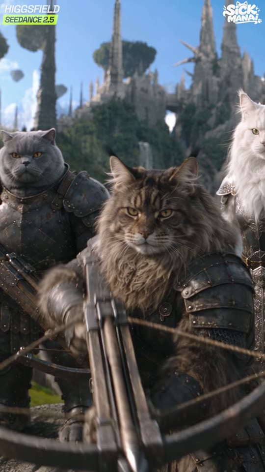
s03_in_03.50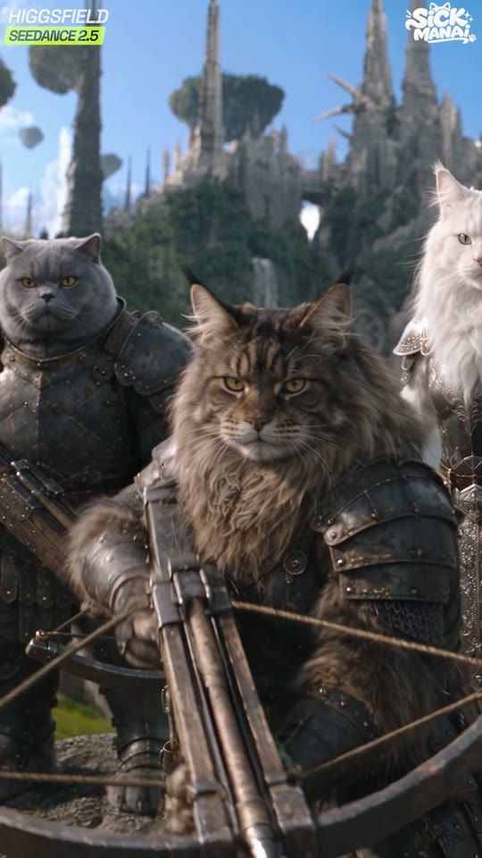
g_03.00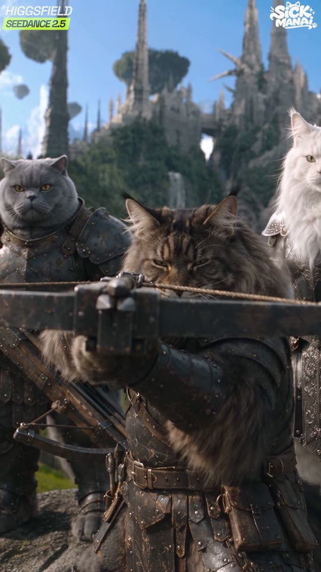
s03_mid_04.43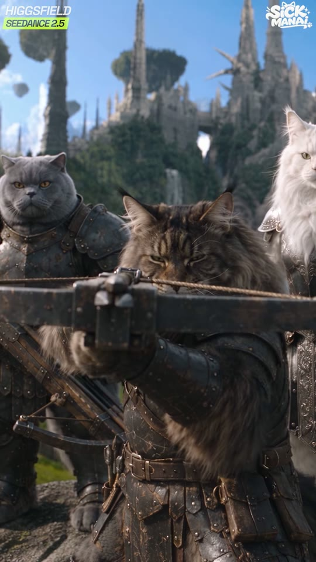
g_04.00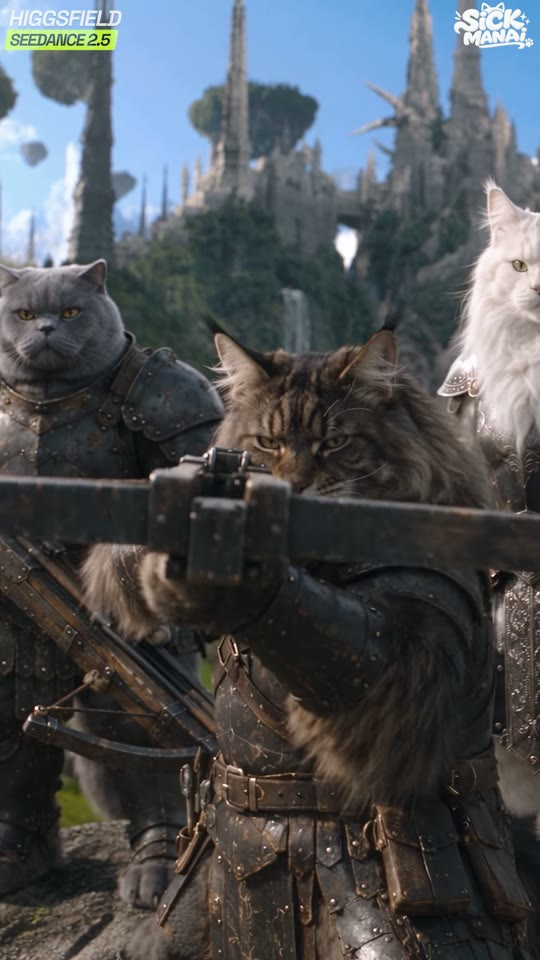
s03_out_05.36| 카메라 움직임 | 고정(0.27px/f) + 아주 느린 푸시인. 메인쿤이 석궁을 들어 올려 조준(4.3s), 4.91s 발사 |
|---|---|
| 화면 구성(구도) | 메인쿤(중앙) 얼굴 x55%,y42%, 몸이 프레임 높이 70%; 좌측 회색 브리티시 숏헤어 x12%,y33%; 우측 흰 장모 고양이 x93%,y28%(프레임에서 반 잘림). 석궁이 y50~70%를 가로지름. 배경 첨탑 상단 |
| 동물 행동/연기 | 바위 위 고양이 병사 3마리. 가운데 긴털 갈색 태비 메인쿤이 석궁을 가슴에서 눈높이로 들어 올리고 한쪽 눈을 가늘게 뜨며 조준, 4.91s 방아쇠 |
| 배경 | 첨탑 도시, 떠 있는 나무 섬(좌상단), 파란 하늘 |
| 화면 문구/자막 | 없음 |
| 다음 컷 전환 | Hard cut — 하드컷 — 석궁 발사 직후(4.91s 트왕 사운드 후 0.5s) 화살 추적 원테이크로 컷 |
| BGM 상태 | 스트링 지속, 긴장 |
효과음 큐
- 4.3s 가죽 삐걱+석궁 드는 소리 (leather creak, crossbow raised)
- 4.91s 석궁 발사 트왕 (heavy crossbow release twang)
9:16 vertical medium group shot, eye-level slightly low. armored cat soldiers: a blue-grey British Shorthair, a huge long-haired brown-tabby Maine Coon with lynx ear tufts, a white long-haired cat, an orange tabby — all in dark riveted leather-and-iron medieval armor. Center: the huge long-haired brown-tabby Maine Coon, face at 55% x / 42% y, holding a large wooden crossbow across its chest (y 50-70%). Left at 12% x: blue-grey British Shorthair with copper eyes, stern. Right edge (half cut off) at 93% x: white long-haired cat in silver armor. Background: gothic needle spires and floating tree islands under clear blue sky. 50mm, f/2.8. photorealistic live-action fantasy film still, real animal fur detail, practical-looking props, cinematic ARRI Alexa look, shallow depth of field, natural sunlight, subtle film grain, no cartoon, no CGI plastic look
Same framing, Maine Coon now aiming the crossbow straight at camera, stock against cheek, crossbow horizontal at 50% y.
The Maine Coon raises the crossbow from chest to eye level, squints one eye and aims straight into the lens, then fires at 1.5 s (small recoil). The other two cats stay still, ears flick. Camera: locked with very slow push-in (3%). No face morphing, crossbow keeps one string.
cartoon, anime, 3d render, plastic toy look, extra limbs, extra tails, human hands, human face, deformed paws, text, watermark, logo, subtitles, blurry face, oversaturated, low detail fur, bow on wrong ear, missing pink bow, armor color change
추천 모델
seedance-2-5 1st choice — 멀티샷 일관성kling-v3 alt — first-last frame으로 '조준 완료' 자세 고정 가능
kling-v3-omni alt2 — 레퍼런스 3마리 동시 유지
5s image2video, first-last frame 추천(끝 프레임=조준 자세). 2.0s 사용
concat (no xfade) — clips are joined back-to-back in the concat filter
next clip starts on the exact frame the previous ends (data-start = previous end), no transition element
🔁 동물 교체 버전 — baby golden hamster
Same shot unchanged — the three cat crossbowmen are the enemy side and stay cats (hero-only swap).
Same as original.
기본안은 주인공만 햄스터로 교체(고양이 왕국 속 햄스터 = 크기 대비가 더 극적). 전면 교체안이면 쥐/기니피그 병사로
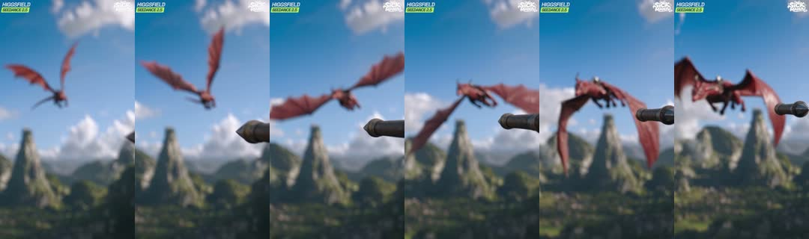
x_5.40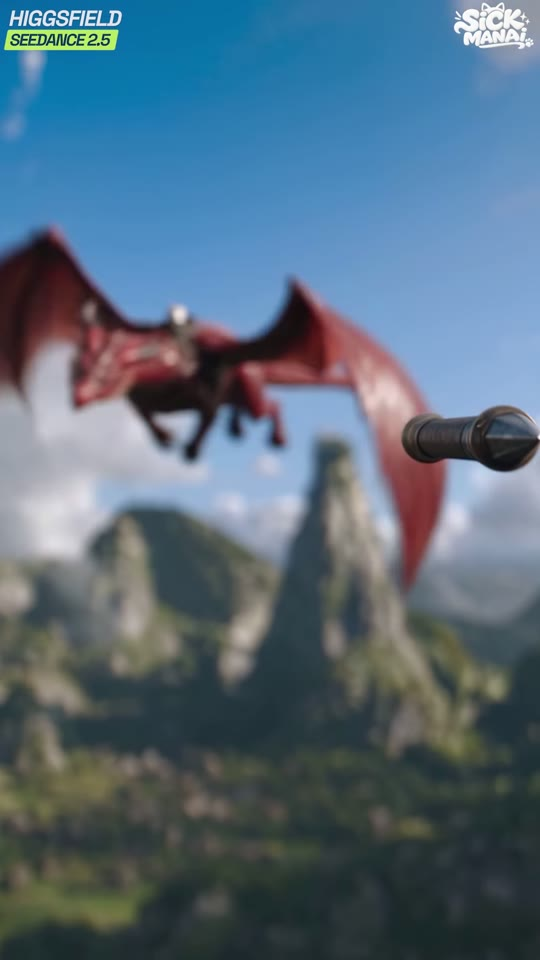
g_06.00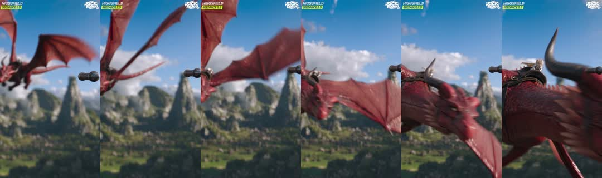
x_6.60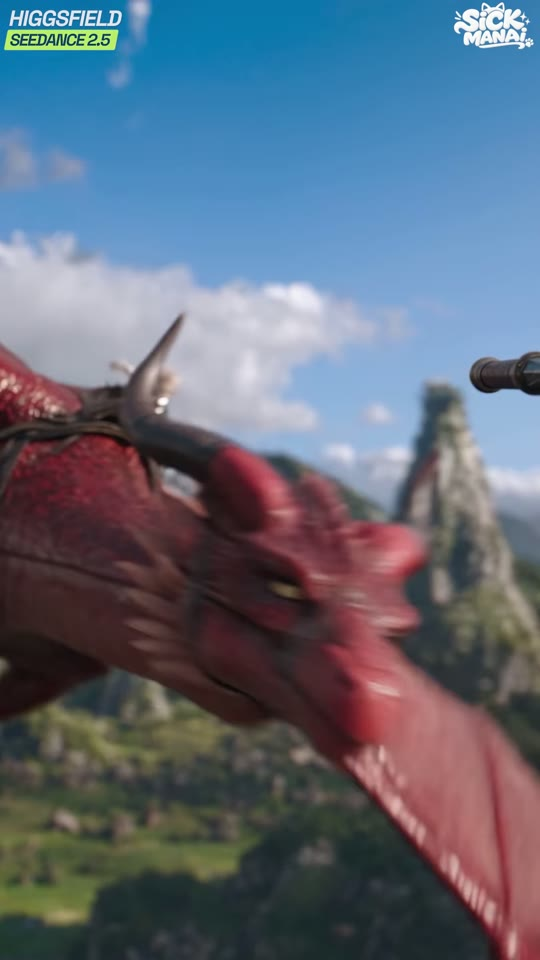
g_07.00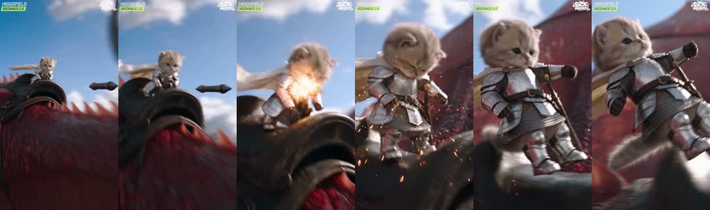
x_7.80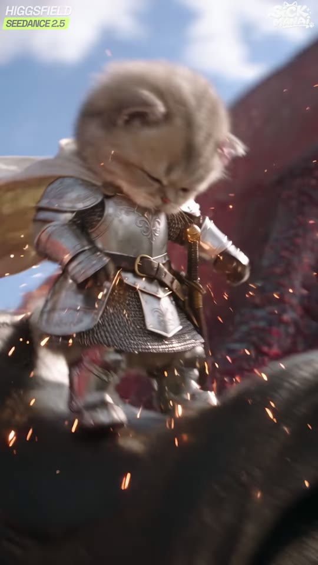
g_08.00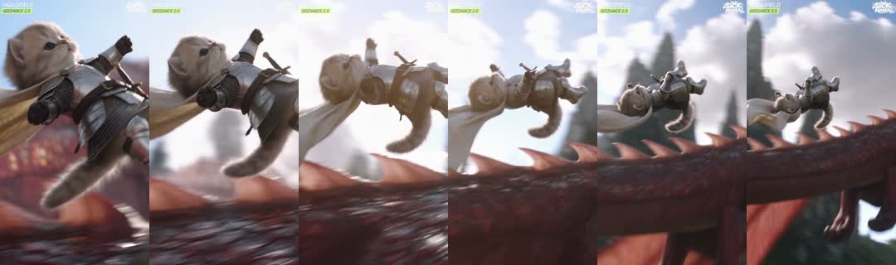
x_9.00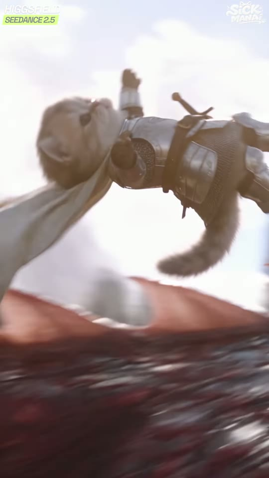
g_09.00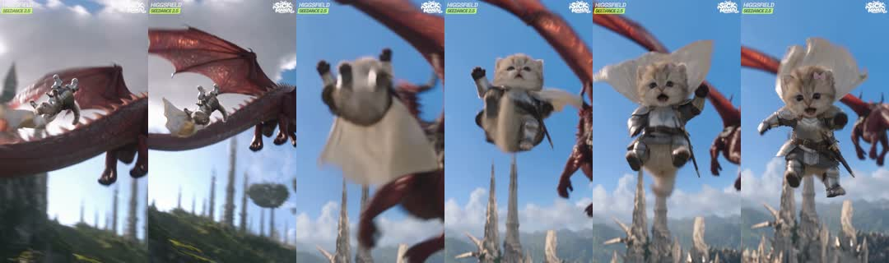
x_10.20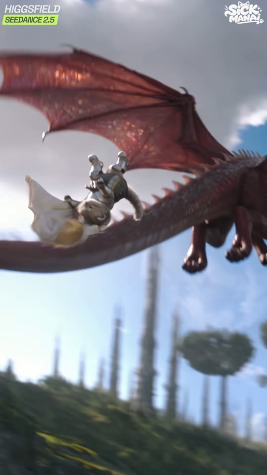
g_10.00| 카메라 움직임 | '볼트 캠' 원테이크: 5.6s 화면 우측(x85~100%,y45%)에 석궁 볼트가 들어와 카메라가 볼트와 나란히 비행 → 드래곤에 급접근(6.5~7.0s 날개 스침, 모션블러) → 드래곤 머리 위 새끼고양이 노출(7.0s) → 8.1~8.3s 볼트가 가슴갑옷 명중(불꽃) → 고양이가 뒤로 튕겨 드래곤 등 가시 위를 구르며 미끄러짐(8.5~9.8s, 강한 모션블러·셰이크) → 꼬리 끝에서 추락(10.0~10.6s). 흐름 3.8px/f |
|---|---|
| 화면 구성(구도) | 시작: 드래곤 x35%,y22%(작게, 높이 25%), 볼트 x90%,y46% 전경. 명중 순간(8.0s): 고양이 x45%,y45%, 높이 60%, 불꽃 파티클 전체. 추락(10.0s): 고양이 x30%,y45%, 드래곤 꼬리 대각선(좌하→우상), 하단 초원 y80% |
| 동물 행동/연기 | 드래곤이 비행 → 볼트 명중 → 새끼고양이가 튕겨져 날아가며 등을 따라 굴러 떨어짐 |
| 배경 | 뾰족한 바위 봉우리 계곡(좌측), 흰 구름, 녹색 들판 → 첨탑/떠 있는 나무섬 |
| 화면 문구/자막 | 없음 |
| 다음 컷 전환 | Hard cut — 하드컷 — 추락 모션 중간(모션 매치: 떨어지는 방향 유지)에서 낙하 정면 샷으로 |
| BGM 상태 | 빌드업, 금관 스탭 |
효과음 큐
- 5.5s 볼트 휘익+바람 (crossbow bolt whistle flyby, rushing wind)
- 6.37s 날개 퍼덕 (big leathery dragon wing flaps)
- 7.06s 드래곤 으르렁 지나감 (dragon growl pass-by)
- 8.27s 갑옷 명중 깡+불꽃 (metal armor impact clang with spark crackle)
- 8.42s 아기고양이 비명(추정) (small kitten yelp)
- 8.8s 갑옷이 비늘 위를 긁는 소리 (armor scraping and clattering over scales)
9:16 vertical aerial action frame. A crimson-red dragon with leathery bat wings, rows of pointed dorsal spikes along the spine and tail, curved black horns, jewel-glitter iridescent chest scales, feather-like crimson neck plumes, black leather riding harness with brass buckles flies across a sunny valley of steep green rock pinnacles at 35% x / 22% y, small (25% of frame height), wings raised. Foreground right edge at 90% x / 46% y: the dark iron tip of a crossbow bolt in sharp focus flying parallel to camera. Background: white cumulus clouds, blue sky, green valley floor. 24mm, f/5.6, motion blur on background. photorealistic live-action fantasy film still, real animal fur detail, practical-looking props, cinematic ARRI Alexa look, shallow depth of field, natural sunlight, subtle film grain, no cartoon, no CGI plastic look
Low angle side view of the red dragon's long spiky tail in flight; the tiny golden-cream British Shorthair kitten knight, big round dark eyes, pale-pink satin bow on her left ear, ornate engraved polished-silver plate armor with gold rosette rivets, chainmail skirt, brown leather belt, gold-hilted sword, cream-white cape falling upside-down off the tail, cape trailing, gothic spires and floating tree islands below.
Continuous one-take 5 s: the camera flies alongside the crossbow bolt toward the dragon, rapidly closing distance; passes under the flapping wing with heavy motion blur; reveals a tiny golden-cream British Shorthair kitten knight, big round dark eyes, pale-pink satin bow on her left ear, ornate engraved polished-silver plate armor with gold rosette rivets, chainmail skirt, brown leather belt, gold-hilted sword, cream-white cape standing on the dragon's head; at 2.7 s the bolt strikes her silver breastplate with a burst of orange sparks; she is knocked backward, cape flipping, tumbles and slides down the dragon's spiky back and falls off the tail into the sky at 4.6 s. Camera shakes on impact then follows her fall. Keep dragon red and identical; kitten keeps bow and armor.
cartoon, anime, 3d render, plastic toy look, extra limbs, extra tails, human hands, human face, deformed paws, text, watermark, logo, subtitles, blurry face, oversaturated, low detail fur, bow on wrong ear, missing pink bow, armor color change, bolt piercing the kitten, blood, gore
추천 모델
seedance-2-5 1st choice — 빠른 액션+원테이크 카메라, 원본과 동일kling-v3 alt — 크리처 물리/모션블러 안정
veo-3-1 alt2 — 대안: 사운드 동시 생성
이 샷 하나만 5s 전체 사용(5.23s). first-last frame(시작: 볼트+드래곤 원경 / 끝: 꼬리에서 추락) 권장. 폭력 필터 회피를 위해 'bolt deflects off armor with sparks'로 표현
concat (no xfade) — clips are joined back-to-back in the concat filter
next clip starts on the exact frame the previous ends (data-start = previous end), no transition element
🔁 동물 교체 버전 — baby golden hamster
Same start frame as original (bolt + distant red dragon). The hero is not visible yet.
Continuous one-take: camera flies with the crossbow bolt toward the red dragon, passes under the wing, reveals a tiny baby golden hamster knight, golden-orange fur with white belly, chubby cheeks, black bead eyes, pale-pink satin bow on her left ear, ornate engraved polished-silver plate armor with gold rivets, chainmail skirt, gold-hilted needle sword, cream-white cape on the dragon's head; the bolt glances off her silver breastplate in a spray of sparks; she is flung backward, rolls like a little furry ball down the spiky back and drops off the tail. Keep hamster identity.
햄스터는 '공처럼 구르는' 모션이 귀여움 포인트 — 'rolls like a fluffy ball' 추가
| 카메라 움직임 | 카메라가 고양이와 함께 낙하(프리폴 트래킹) + 틸트업(콘텐츠가 위로 3.5px/f). 배경 성 첨탑이 위로 흘러감 |
|---|---|
| 화면 구성(구도) | 고양이 몸 중심 x50%,y50%, 높이 60%(망토 포함 85%), 망토가 머리 위로 낙하산처럼 부풀어 y5~45%, 드래곤 우측 x80%,y45%(초반, 빠져나감) |
| 동물 행동/연기 | 입을 벌리고(비명/야옹) 팔다리를 벌린 채 떨어지는 새끼고양이. 망토가 위로 뒤집혀 펄럭임. 표정: 놀람→멍함 |
| 배경 | 고딕 첨탑 도시가 아래서 다가옴(블러), 먼 산맥, 파란 하늘 |
| 화면 문구/자막 | 없음 |
| 다음 컷 전환 | Hard cut — 하드컷 — 클로즈 낙하 → 극광각 설정샷으로 스케일 점프 |
| BGM 상태 | 스트링 상승, 드럼 잠시 빠짐 |
효과음 큐
- 10.8s 낙하 바람+망토 펄럭 (freefall wind rush, cape flapping)
- 11.1s 아기고양이 비명 야옹 (tiny kitten scream meow)
- 13.09s 먼 드래곤 울음 (distant dragon screech)
9:16 vertical shot, camera below and in front of a falling KITTEN HERO (identical in every shot): tiny 8-week-old female golden-cream British Shorthair kitten, plush short fluffy fur, pale cream-beige body with faint golden-tan tabby shading on the forehead and cheeks, round face, big round dark-brown eyes, small pink nose, small rounded ears, a pale-pink satin bow clipped on her LEFT ear (appears on viewer's right), wearing miniature ornate polished-silver full plate armor: engraved fleur-de-lis filigree breastplate, layered pauldrons with gold rosette rivets at the cape clasps, segmented vambraces, chainmail skirt, brown leather sword belt with brass buckle, short sword with gold cross-guard, cream-white linen cape (in the meadow scenes a white satin cape with a grey-brown fur collar). She falls toward camera, limbs spread, mouth open in a tiny scream, big round eyes; her cream cape billows straight up above her head like a parachute (y 5-45%). Body centered 50% x / 50% y, 60% of frame height. Behind/below: blurred gothic needle spires of a white-stone city, distant blue mountains, blue sky; the red dragon exits frame right. 35mm, f/2.8. photorealistic live-action fantasy film still, real animal fur detail, practical-looking props, cinematic ARRI Alexa look, shallow depth of field, natural sunlight, subtle film grain, no cartoon, no CGI plastic look
Freefall: kitten falls toward camera, paws flailing, mouth opens and closes (meow scream), then a stunned blank look; cape flaps violently above. Camera falls with her at the same speed while tilting, city spires rush upward behind her with motion blur. 3 s. Keep face, bow on left ear, armor unchanged.
cartoon, anime, 3d render, plastic toy look, extra limbs, extra tails, human hands, human face, deformed paws, text, watermark, logo, subtitles, blurry face, oversaturated, low detail fur, bow on wrong ear, missing pink bow, armor color change
추천 모델
seedance-2-5 1st choice — 표정 연기+천 시뮬레이션kling-v3 alt — 천/털 물리 매우 좋음
minimax-h3 alt2 — 표정 과장에 유리
5s image2video, 2.73s 사용. 시드 고정 후 표정만 여러 번 뽑아 가장 귀여운 테이크 선택
concat (no xfade) — clips are joined back-to-back in the concat filter
next clip starts on the exact frame the previous ends (data-start = previous end), no transition element
🔁 동물 교체 버전 — baby golden hamster
9:16 vertical, camera below and in front of a falling HAMSTER HERO (identical in every shot): tiny 3-week-old baby golden (Syrian) hamster, fluffy golden-orange back fur, white cream belly and muzzle, chubby round cheeks, shiny black bead eyes, tiny pink nose and pink paws, small round translucent ears, a pale-pink satin bow on her LEFT ear, wearing miniature ornate polished-silver full plate armor with engraved fleur-de-lis filigree breastplate, gold rosette rivets, chainmail skirt, brown leather belt with brass buckle, needle-sized short sword with gold cross-guard, cream-white linen cape; tiny paws spread, mouth open showing two little front teeth in a squeak, cheeks puffed by wind, cream cape billowing above like a parachute. City spires blurred below. 35mm, f/2.8. photorealistic live-action fantasy film still, real animal fur detail, practical-looking props, cinematic ARRI Alexa look, shallow depth of field, natural sunlight, subtle film grain, no cartoon, no CGI plastic look
Freefall toward camera, paws flailing, cheeks flapping in the wind, squeaking, cape billowing above; camera falls with her, spires rush upward.
햄스터 볼살이 바람에 흔들리는 'cheeks flapping in the wind'가 핵심 개그
| 카메라 움직임 | 아주 느린 틸트다운/푸시인(0.67px/f). 고양이(망토 달린 작은 점)가 좌중앙에서 아래 마을로 사선 낙하 |
|---|---|
| 화면 구성(구도) | 드래곤 x78%,y22%(작게) → 우상단으로 이탈, 첨탑 스카이라인 y28~55%, 폭포 x58%,y70~85%, 고양이 x52%,y64% → x57%,y87%(건초 수레 방향), 하단 25% 초원 마을 |
| 동물 행동/연기 | 드래곤은 하늘을 떠나고 작은 고양이가 성 아래 마을로 떨어짐 |
| 배경 | 첨탑 도시 전경, 떠 있는 나무섬 2개(좌측 x10%,y40% / x45%,y42%), 폭포, 초가 마을 |
| 화면 문구/자막 | 없음 |
| 다음 컷 전환 | Hard cut + orientation switch — 하드컷 — 여기서부터 영상 끝까지 가로(16:9) 원본을 90도 시계방향 회전해 세로 화면을 채움. 시청자가 폰을 옆으로 돌리게 만드는 패턴 인터럽트 |
| BGM 상태 | 넓은 오케스트라 패드 |
효과음 큐
- 13.5s 멀어지는 날개짓 (distant wind, faint dragon wingbeats receding)
9:16 vertical extreme wide establishing shot, low angle from a green village meadow. fantasy kingdom: gothic white-stone cathedral city with needle spires, rose windows, a tall waterfall, floating tree-topped rock islands, green meadows, thatched village: three giant needle spires and a cathedral with two rose windows on the right, a waterfall at 58% x, two floating tree-topped rock islands at the left. The crimson-red dragon with leathery bat wings, rows of pointed dorsal spikes along the spine and tail, curved black horns, jewel-glitter iridescent chest scales, feather-like crimson neck plumes, black leather riding harness with brass buckles flies small at 78% x / 22% y. A tiny caped kitten figure falls at 52% x / 64% y. Bottom 25%: thatched cottages and fences. Deep blue sky. 24mm, f/8, deep focus, crisp midday sun. photorealistic live-action fantasy film still, real animal fur detail, practical-looking props, cinematic ARRI Alexa look, shallow depth of field, natural sunlight, subtle film grain, no cartoon, no CGI plastic look
The dragon glides away to the upper right; the tiny caped kitten falls diagonally downward toward the village at the bottom center and disappears behind cottages at 1.3 s. Waterfall mist moves. Camera: slow tilt down 5%. Keep city architecture rigid.
cartoon, anime, 3d render, plastic toy look, extra limbs, extra tails, human hands, human face, deformed paws, text, watermark, logo, subtitles, blurry face, oversaturated, low detail fur, bow on wrong ear, missing pink bow, armor color change, warped buildings
추천 모델
seedance-2-5 1st choice — 대규모 판타지 풍경 일관veo-3-1 alt — 건축물 안정성 최고
wan-v3-0 alt2 — 저비용 설정샷
5s image2video, 1.33s 사용. 스틸 이미지를 nano-banana-pro로 먼저 확정
next clips: -vf "transpose=1,scale=1080:1920"
next clip element wrapped in a div with transform: rotate(90deg) sized 1920x1080 centered in the 1080x1920 stage
🔁 동물 교체 버전 — baby golden hamster
Same establishing shot; the falling figure is a tiny golden hamster with cream cape (a speck at 52% x / 64% y).
Same as original.
원경이므로 동일 사용 가능

| 카메라 움직임 | 고정, 15.4s 충돌 순간 셰이크 3~4프레임. 건초가 폭발하듯 튐 |
|---|---|
| 화면 구성(구도) | (세로 화면 기준) 건초 더미가 좌측 x0~65% 차지, 나무 수레 좌상단 x0~40%,y0~45%, 흰 페르시안(검은 털망토) x60%,y30% 작게, 하늘/구름 우측 x60~100%. 원본 가로 기준: 건초가 하단 65%, 하늘 상단 |
| 동물 행동/연기 | 15.4s 새끼고양이가 하늘에서 건초 수레에 처박힘(프레임 밖에서 진입) → 건초 조각이 사방으로 폭발, 페르시안이 움찔 |
| 배경 | 흐린 하늘+흰 구름, 멀리 초원 |
| 화면 문구/자막 | 없음 |
| 다음 컷 전환 | Hard cut — 하드컷 (0프레임, 디졸브 없음) |
| BGM 상태 | 잠깐 코믹 브레이크(피치카토 느낌, 추정) |
효과음 큐
- 15.41s 건초에 쿵 (heavy thump into hay bale)
- 15.62s 건초 사방 튀는 소리+수레 삐걱 (straw burst rustle and wood cart creak)
16:9 LANDSCAPE (to be rotated). Worm's-eye low angle from the ground next to an old wooden hay cart piled high with golden straw filling the bottom 65% of the frame; the cart's wooden side rails and a spoked wheel at the upper-left. On top/behind the hay sits a white long-haired Persian cat with flat face and copper-orange eyes, in a black wool cloak with a thick grey-black fur collar, an embroidered cat-head crest on the back, black leather armor with silver chevron plate, small, looking up. Upper third: overcast blue sky with big white clouds. 24mm, f/4, soft backlit afternoon sun. photorealistic live-action fantasy film still, real animal fur detail, practical-looking props, cinematic ARRI Alexa look, shallow depth of field, natural sunlight, subtle film grain, no cartoon, no CGI plastic look. ROTATED SHOT: generate as normal upright 16:9 landscape (1920x1080), then rotate 90 degrees clockwise in the edit (ffmpeg transpose=1) so the ground sits on the LEFT edge and the sky on the RIGHT of the 9:16 frame.
At 0.7 s something small crashes from the sky into the hay: the hay explodes upward, straw flies everywhere and floats down in slow drifting pieces; the Persian cat flinches and leans back; camera shakes for 4 frames on impact then settles. 2 s.
cartoon, anime, 3d render, plastic toy look, extra limbs, extra tails, human hands, human face, deformed paws, text, watermark, logo, subtitles, blurry face, oversaturated, low detail fur, bow on wrong ear, missing pink bow, armor color change
추천 모델
seedance-2-5 1st choice — 원본 동일, 파티클 풍부kling-v3 alt — 건초 파티클 물리
hailuo-2-3 alt2 — 저비용 대안
🔴 16:9로 생성 후 편집에서 90° 시계방향 회전. 원본 추정: 7~10번 샷을 Seedance 2.5 가로 멀티샷 1회(~12s)
concat (no xfade) — clips are joined back-to-back in the concat filter
next clip starts on the exact frame the previous ends (data-start = previous end), no transition element
🔁 동물 교체 버전 — baby golden hamster
Same as original (hero not visible).
Same, but the impact is smaller: a small golden blur plops into the hay, a smaller straw puff.
햄스터는 가벼우므로 '퐁' 하고 작은 먼지 — 크기 개그로 활용
| 카메라 움직임 | 고정, 16.6s 블러 상태에서 고양이 머리가 건초 속에서 솟아오르며 초점이 맞음 |
|---|---|
| 화면 구성(구도) | (세로 화면 기준) 고양이 얼굴 x42%,y48%, 얼굴 높이 30%, 건초가 좌측 x0~55%, 페르시안의 검은 털망토 x65%,y40% 흐림, 하늘 우측. 원본 가로: 얼굴이 중앙 하단, 건초 위로 머리만 빼꼼 |
| 동물 행동/연기 | 새끼고양이가 건초 속에서 머리를 빼꼼 내밀고 멍한 표정, 머리에 지푸라기가 꽂힘, 눈 깜빡 |
| 배경 | 검은 망토 입은 흰 페르시안 고양이(흐림), 흐린 하늘 |
| 화면 문구/자막 | 없음 |
| 다음 컷 전환 | Hard cut — 하드컷 (0프레임, 디졸브 없음) |
| BGM 상태 | 잔잔, 오케스트라 패드 |
효과음 큐
- 16.7s 지푸라기 부스럭 (straw rustle as head pops out)
- 17.8s 작은 야옹(추정) (tiny confused mew)
16:9 LANDSCAPE close-up at hay level: tiny golden-cream British Shorthair kitten knight, big round dark eyes, pale-pink satin bow on her left ear, ornate engraved polished-silver plate armor with gold rosette rivets, chainmail skirt, brown leather belt, gold-hilted sword, cream-white cape with only her head and shoulder armor poking out of a golden hay pile, a few straws stuck on her head, dazed wide eyes looking up, bow on her left ear. Behind her, out of focus: a white long-haired Persian cat with flat face and copper-orange eyes, in a black wool cloak with a thick grey-black fur collar, an embroidered cat-head crest on the back, black leather armor with silver chevron plate seen from the side. Upper area: cloudy sky. 50mm, f/2. photorealistic live-action fantasy film still, real animal fur detail, practical-looking props, cinematic ARRI Alexa look, shallow depth of field, natural sunlight, subtle film grain, no cartoon, no CGI plastic look. ROTATED SHOT: generate as normal upright 16:9 landscape (1920x1080), then rotate 90 degrees clockwise in the edit (ffmpeg transpose=1) so the ground sits on the LEFT edge and the sky on the RIGHT of the 9:16 frame.
The kitten's head pushes up out of the hay from below frame, straws fall off, she blinks twice slowly with a stunned expression, tiny head wobble. Camera locked, rack focus from blur to sharp on her eyes in the first 0.4 s. 3 s.
cartoon, anime, 3d render, plastic toy look, extra limbs, extra tails, human hands, human face, deformed paws, text, watermark, logo, subtitles, blurry face, oversaturated, low detail fur, bow on wrong ear, missing pink bow, armor color change
추천 모델
kling-v3 1st choice — 초근접 얼굴 디테일·표정seedance-2-5 alt — 원본 동일
minimax-h3 alt2 — 귀여운 표정 연기
🔴 16:9 생성 후 회전. 5s image2video, 2.9s 사용
concat (no xfade) — clips are joined back-to-back in the concat filter
next clip starts on the exact frame the previous ends (data-start = previous end), no transition element
🔁 동물 교체 버전 — baby golden hamster
16:9 LANDSCAPE close-up: tiny baby golden hamster knight, golden-orange fur with white belly, chubby cheeks, black bead eyes, pale-pink satin bow on her left ear, ornate engraved polished-silver plate armor with gold rivets, chainmail skirt, gold-hilted needle sword, cream-white cape poking only her head out of a hay pile, straws on her head, cheeks stuffed, dazed black bead eyes. Blurred Persian cat behind. Cloudy sky. 50mm f/2. photorealistic live-action fantasy film still, real animal fur detail, practical-looking props, cinematic ARRI Alexa look, shallow depth of field, natural sunlight, subtle film grain, no cartoon, no CGI plastic look. ROTATED SHOT: generate as normal upright 16:9 landscape (1920x1080), then rotate 90 degrees clockwise in the edit (ffmpeg transpose=1) so the ground sits on the LEFT edge and the sky on the RIGHT of the 9:16 frame.
Hamster head pops out of the hay, shakes straws off, blinks, cheeks puffed full of straw, nose twitching.
'볼주머니에 지푸라기 가득' 개그 추가 가능
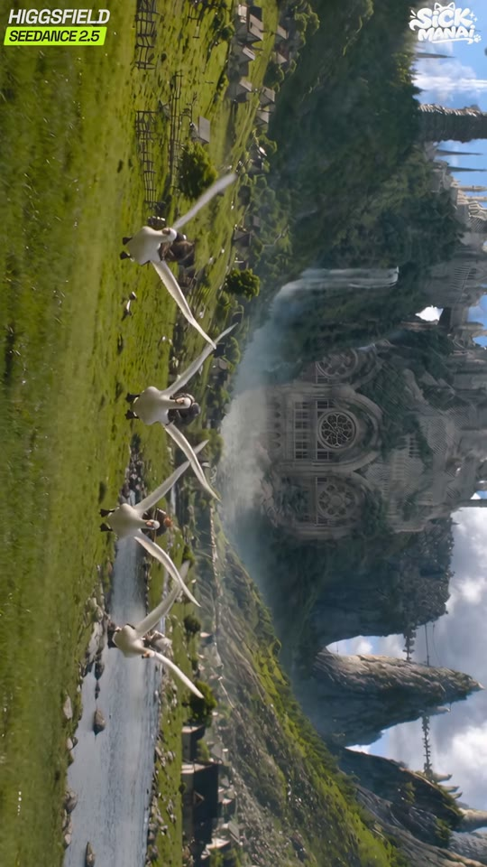
s09_in_19.50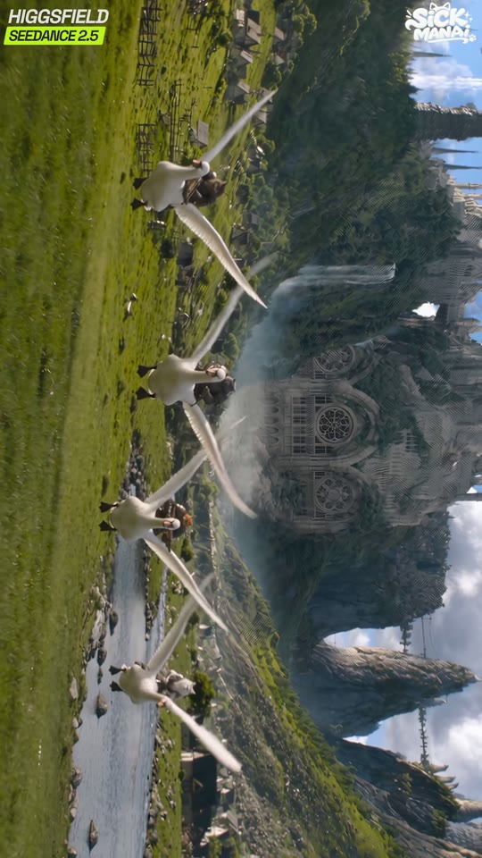
g_20.00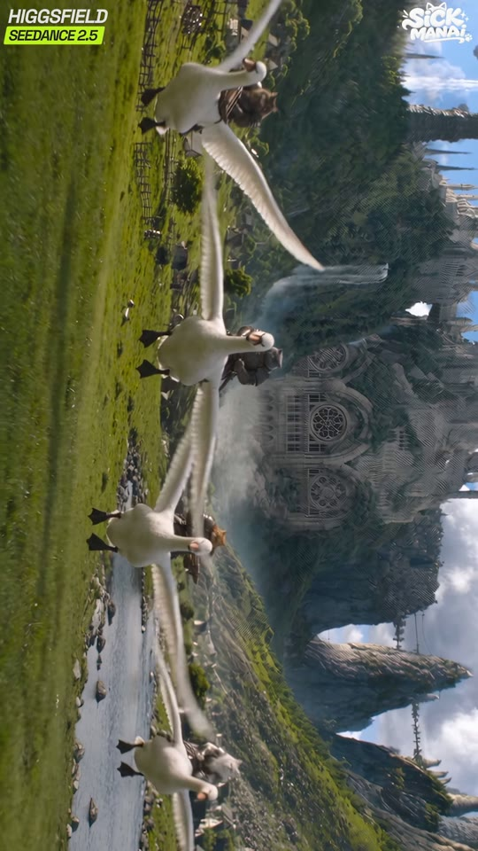
g_21.00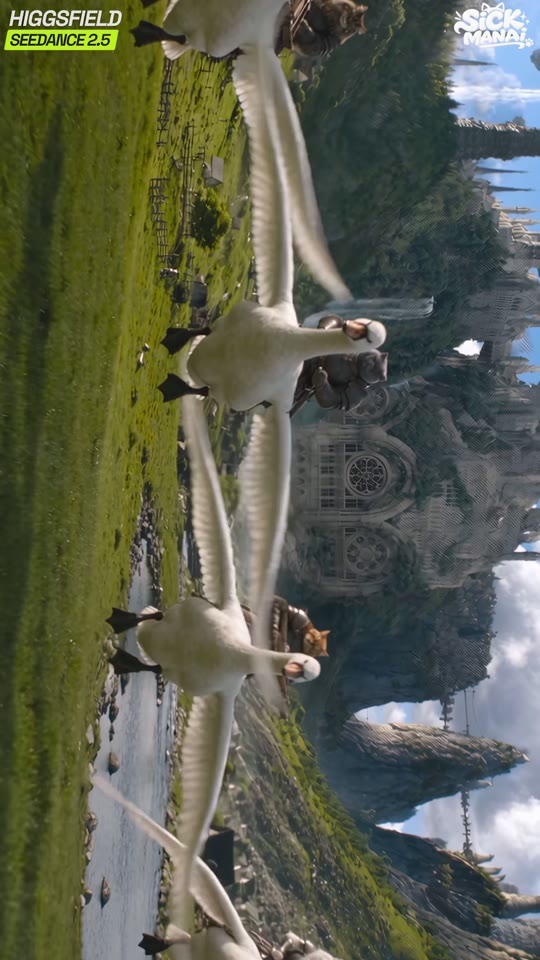
g_22.00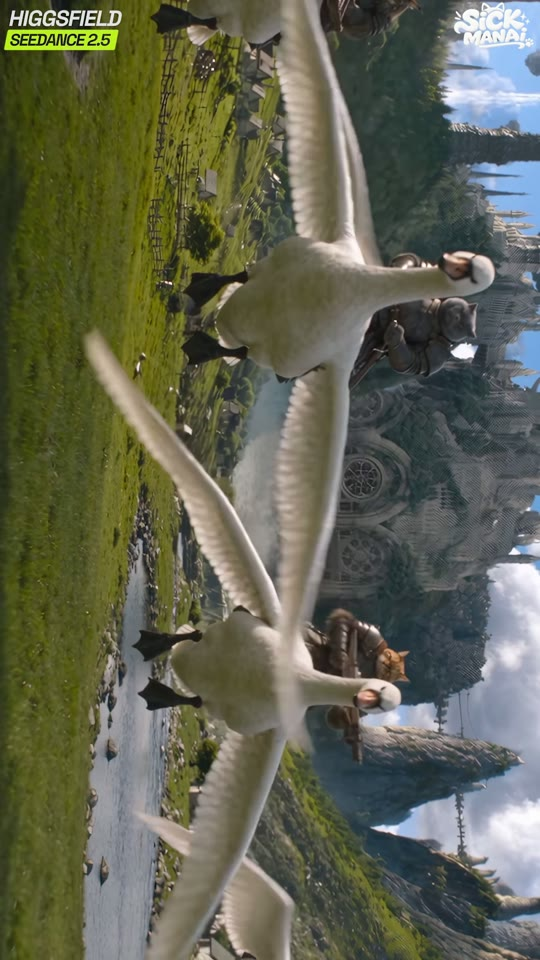
g_23.00| 카메라 움직임 | 고정(0.62px/f). 거위 기병대가 카메라 쪽으로 돌진하며 프레임을 채움 |
|---|---|
| 화면 구성(구도) | (세로 화면 기준) 초원이 좌측 x0~35%, 성/폭포 중앙~우측, 거위 4~5마리가 세로로 한 줄(원본 가로에서는 가로 한 줄 돌진). 선두 거위 크기: 19.5s 높이 10% → 23.5s 35% |
| 동물 행동/연기 | 갑옷 입은 고양이 기사들이 흰 거위를 타고 날개를 퍼덕이며 초원을 가로질러 돌격 |
| 배경 | 대성당(장미창), 폭포, 개울, 마을 울타리, 떠 있는 바위 |
| 화면 문구/자막 | 없음 |
| 다음 컷 전환 | Hard cut — 하드컷 (0프레임, 디졸브 없음) |
| BGM 상태 | 행진 리듬, 스네어 롤 진입 |
효과음 큐
- 19.7s 거위 떼 꽥꽥+날개짓 (flock of geese honking, wings flapping)
- 22.54s 근접 거위 꽥 (loud goose honk close pass)
- 21.0s 물갈퀴 발소리+갑옷 덜컥 (webbed feet thumping on grass, armor rattle)
16:9 LANDSCAPE wide low shot just above meadow grass: a line of five big white domestic geese charging toward camera across a green meadow beside a small stream, each ridden by an armored cat knight (armored cat soldiers: a blue-grey British Shorthair, a huge long-haired brown-tabby Maine Coon with lynx ear tufts, a white long-haired cat, an orange tabby — all in dark riveted leather-and-iron medieval armor), goose wings spread. Background: fantasy kingdom: gothic white-stone cathedral city with needle spires, rose windows, a tall waterfall, floating tree-topped rock islands, green meadows, thatched village, rose-window cathedral and waterfall in soft haze. 28mm, f/5.6, bright sun. photorealistic live-action fantasy film still, real animal fur detail, practical-looking props, cinematic ARRI Alexa look, shallow depth of field, natural sunlight, subtle film grain, no cartoon, no CGI plastic look. ROTATED SHOT: generate as normal upright 16:9 landscape (1920x1080), then rotate 90 degrees clockwise in the edit (ffmpeg transpose=1) so the ground sits on the LEFT edge and the sky on the RIGHT of the 9:16 frame.
The goose cavalry charges straight at the camera: geese run with necks stretched forward, wings flapping wide, cat riders bouncing in the saddles holding swords and spears. Riders grow from small to large over 4 s. Camera locked, low. Keep geese white with orange beaks, cats consistent.
cartoon, anime, 3d render, plastic toy look, extra limbs, extra tails, human hands, human face, deformed paws, text, watermark, logo, subtitles, blurry face, oversaturated, low detail fur, bow on wrong ear, missing pink bow, armor color change, swans, horses
추천 모델
seedance-2-5 1st choice — 다수 개체 군중 모션kling-v3 alt — 날개 물리
veo-3-1 alt2 — 다수 캐릭터 일관성
🔴 16:9 생성 후 회전. 5s, 4.1s 사용
concat (no xfade) — clips are joined back-to-back in the concat filter
next clip starts on the exact frame the previous ends (data-start = previous end), no transition element
🔁 동물 교체 버전 — baby golden hamster
Same as original (cat goose-cavalry are the antagonists).
Same as original.
주인공 교체안에서는 그대로 사용
| 카메라 움직임 | 고정, 24.0s 몸을 일으킬 때 모션블러 |
|---|---|
| 화면 구성(구도) | (세로 화면 기준) 고양이 얼굴 x60%,y45%, 칼날이 x40~95%, y0~28% 대각선, 건초 좌측 x0~45% |
| 동물 행동/연기 | 새끼고양이가 건초 속에서 몸부림쳐 일어나 칼을 뽑아 위로 치켜듦, 결의에 찬 표정 |
| 배경 | 검은 망토 페르시안(흐림), 흐린 하늘 |
| 화면 문구/자막 | 없음 |
| 다음 컷 전환 | Hard cut — 하드컷 (0프레임, 디졸브 없음) |
| BGM 상태 | 영웅 모티프 호른 짧게(추정) |
효과음 큐
- 23.9s 지푸라기+갑옷 짤랑 (straw rustle, armor clink as she stands)
- 24.61s 칼 뽑는 챙 (sword unsheathing metallic ring)
16:9 LANDSCAPE medium close-up at hay level: KITTEN HERO (identical in every shot): tiny 8-week-old female golden-cream British Shorthair kitten, plush short fluffy fur, pale cream-beige body with faint golden-tan tabby shading on the forehead and cheeks, round face, big round dark-brown eyes, small pink nose, small rounded ears, a pale-pink satin bow clipped on her LEFT ear (appears on viewer's right), wearing miniature ornate polished-silver full plate armor: engraved fleur-de-lis filigree breastplate, layered pauldrons with gold rosette rivets at the cape clasps, segmented vambraces, chainmail skirt, brown leather sword belt with brass buckle, short sword with gold cross-guard, cream-white linen cape (in the meadow scenes a white satin cape with a grey-brown fur collar) rising out of the golden hay pile, holding her gold-hilted sword raised diagonally above her head, determined face at the center-right. Blurred white long-haired Persian cat with flat face and copper-orange eyes, in a black wool cloak with a thick grey-black fur collar, an embroidered cat-head crest on the back, black leather armor with silver chevron plate behind. Cloudy sky. 50mm, f/2.2. photorealistic live-action fantasy film still, real animal fur detail, practical-looking props, cinematic ARRI Alexa look, shallow depth of field, natural sunlight, subtle film grain, no cartoon, no CGI plastic look. ROTATED SHOT: generate as normal upright 16:9 landscape (1920x1080), then rotate 90 degrees clockwise in the edit (ffmpeg transpose=1) so the ground sits on the LEFT edge and the sky on the RIGHT of the 9:16 frame.
She struggles upward out of the hay (quick blurred motion), then draws her sword and raises it with both paws, chin up, determined. Straws fall. 2.7 s. Camera locked. Keep sword single, bow on left ear.
cartoon, anime, 3d render, plastic toy look, extra limbs, extra tails, human hands, human face, deformed paws, text, watermark, logo, subtitles, blurry face, oversaturated, low detail fur, bow on wrong ear, missing pink bow, armor color change
추천 모델
kling-v3 1st choice — 칼 쥔 앞발 디테일seedance-2-5 alt — 원본 동일
kling-video-o1 alt2 — 손/무기 쥐기 정확도
🔴 16:9 생성 후 회전. 5s, 2.73s 사용
concat (no xfade) — clips are joined back-to-back in the concat filter
next clip starts on the exact frame the previous ends (data-start = previous end), no transition element
🔁 동물 교체 버전 — baby golden hamster
16:9 LANDSCAPE MCU: HAMSTER HERO (identical in every shot): tiny 3-week-old baby golden (Syrian) hamster, fluffy golden-orange back fur, white cream belly and muzzle, chubby round cheeks, shiny black bead eyes, tiny pink nose and pink paws, small round translucent ears, a pale-pink satin bow on her LEFT ear, wearing miniature ornate polished-silver full plate armor with engraved fleur-de-lis filigree breastplate, gold rosette rivets, chainmail skirt, brown leather belt with brass buckle, needle-sized short sword with gold cross-guard, cream-white linen cape rising out of hay, holding her needle sword raised with both tiny pink paws, determined puffed cheeks. photorealistic live-action fantasy film still, real animal fur detail, practical-looking props, cinematic ARRI Alexa look, shallow depth of field, natural sunlight, subtle film grain, no cartoon, no CGI plastic look. ROTATED SHOT: generate as normal upright 16:9 landscape (1920x1080), then rotate 90 degrees clockwise in the edit (ffmpeg transpose=1) so the ground sits on the LEFT edge and the sky on the RIGHT of the 9:16 frame.
Hamster wriggles out of the hay, stands on hind legs and raises her tiny sword with both paws, determined.
햄스터는 뒷발로 서는 포즈가 자연스러움 — 'stands on hind legs' 명시
| 카메라 움직임 | 고정, 거위 기병이 우→좌(원본 가로 기준 좌→우) 스쳐 지나감 |
|---|---|
| 화면 구성(구도) | (세로 화면 기준) 전경 좌측 x0~45%,y33~60%: 고양이 뒤통수+흰 새틴 망토+회갈색 털칼라(블러), 칼날 x0~35%,y68~75%; 거위 기병 2마리 x40~90% |
| 동물 행동/연기 | 칼을 든 새끼고양이 앞으로 거위 기병대가 몰려와 포위 |
| 배경 | 대성당, 폭포, 구름, 초원 |
| 화면 문구/자막 | 없음 |
| 다음 컷 전환 | Hard cut — 하드컷 (0프레임, 디졸브 없음) |
| BGM 상태 | 긴장 스트링 |
효과음 큐
- 26.4s 날개 휙+꽥 (goose wings whoosh past, honk)
16:9 LANDSCAPE over-the-shoulder from behind the tiny golden-cream British Shorthair kitten knight, big round dark eyes, pale-pink satin bow on her left ear, ornate engraved polished-silver plate armor with gold rosette rivets, chainmail skirt, brown leather belt, gold-hilted sword, cream-white cape (now in white satin cape with grey-brown fur collar), her back blurred in the left foreground, sword pointing forward. Two geese with armored cat riders rush past at mid-ground, wings spread. Background: fantasy kingdom: gothic white-stone cathedral city with needle spires, rose windows, a tall waterfall, floating tree-topped rock islands, green meadows, thatched village. 35mm, f/2.8. photorealistic live-action fantasy film still, real animal fur detail, practical-looking props, cinematic ARRI Alexa look, shallow depth of field, natural sunlight, subtle film grain, no cartoon, no CGI plastic look. ROTATED SHOT: generate as normal upright 16:9 landscape (1920x1080), then rotate 90 degrees clockwise in the edit (ffmpeg transpose=1) so the ground sits on the LEFT edge and the sky on the RIGHT of the 9:16 frame.
Goose cavalry sweeps past from left to right in front of the kitten, wings beating, riders turn their heads toward her; the kitten stays still, sword raised. 1.5 s used. Camera locked.
cartoon, anime, 3d render, plastic toy look, extra limbs, extra tails, human hands, human face, deformed paws, text, watermark, logo, subtitles, blurry face, oversaturated, low detail fur, bow on wrong ear, missing pink bow, armor color change
추천 모델
seedance-2-5 1st choice — 멀티샷 연속kling-v3 alt — OTS 전경 블러 자연스러움
🔴 16:9→회전. 원본 추정: 11~13번을 1회 멀티샷(~5s)
concat (no xfade) — clips are joined back-to-back in the concat filter
next clip starts on the exact frame the previous ends (data-start = previous end), no transition element
🔁 동물 교체 버전 — baby golden hamster
Same OTS but foreground is the round golden back of the tiny baby golden hamster knight, golden-orange fur with white belly, chubby cheeks, black bead eyes, pale-pink satin bow on her left ear, ornate engraved polished-silver plate armor with gold rivets, chainmail skirt, gold-hilted needle sword, cream-white cape with fur-collared white satin cape. ROTATED SHOT: generate as normal upright 16:9 landscape (1920x1080), then rotate 90 degrees clockwise in the edit (ffmpeg transpose=1) so the ground sits on the LEFT edge and the sky on the RIGHT of the 9:16 frame.
Same as original.
전경 뒷모습 크기를 고양이보다 30% 작게
| 카메라 움직임 | 고정(0.32px/f), 전경 거대한 칼날이 스윙하며 지나감(얕은 심도) |
|---|---|
| 화면 구성(구도) | (세로 화면 기준) 새끼고양이 x37%,y45%(높이 13%, 아주 작게) 칼을 위로, 건초 수레 x60%,y33%, 전경 큰 칼 대각선 x25~90%,y5~35% 블러 |
| 동물 행동/연기 | 광활한 풀밭에 홀로 선 작은 새끼고양이, 거대한 적의 칼이 전경을 가로지름(크기 대비) |
| 배경 | 초원, 건초 수레, 뭉게구름 |
| 화면 문구/자막 | 없음 |
| 다음 컷 전환 | Hard cut — 하드컷 (0프레임, 디졸브 없음) |
| BGM 상태 | 스트링 스탭 |
효과음 큐
- 27.7s 큰 칼 휘익 (big sword swoosh close to camera)
16:9 LANDSCAPE ground-level wide: a tiny tiny golden-cream British Shorthair kitten knight, big round dark eyes, pale-pink satin bow on her left ear, ornate engraved polished-silver plate armor with gold rosette rivets, chainmail skirt, brown leather belt, gold-hilted sword, cream-white cape standing alone in tall green meadow grass holding her sword up, small (13% of frame height) at left-center; a hay cart behind her; a giant out-of-focus steel sword blade cuts diagonally across the foreground. Huge cloudy blue sky. 24mm, f/2.8. photorealistic live-action fantasy film still, real animal fur detail, practical-looking props, cinematic ARRI Alexa look, shallow depth of field, natural sunlight, subtle film grain, no cartoon, no CGI plastic look. ROTATED SHOT: generate as normal upright 16:9 landscape (1920x1080), then rotate 90 degrees clockwise in the edit (ffmpeg transpose=1) so the ground sits on the LEFT edge and the sky on the RIGHT of the 9:16 frame.
Foreground giant sword blade swings slowly across the lens; the kitten braces, grass sways. 1 s used.
cartoon, anime, 3d render, plastic toy look, extra limbs, extra tails, human hands, human face, deformed paws, text, watermark, logo, subtitles, blurry face, oversaturated, low detail fur, bow on wrong ear, missing pink bow, armor color change
추천 모델
seedance-2-5 1st choice — 멀티샷 연속wan-v3-0 alt — 짧은 컷 저비용
🔴 16:9→회전. 0.97s만 사용
concat (no xfade) — clips are joined back-to-back in the concat filter
next clip starts on the exact frame the previous ends (data-start = previous end), no transition element
🔁 동물 교체 버전 — baby golden hamster
Same wide shot with the tiny tiny baby golden hamster knight, golden-orange fur with white belly, chubby cheeks, black bead eyes, pale-pink satin bow on her left ear, ornate engraved polished-silver plate armor with gold rivets, chainmail skirt, gold-hilted needle sword, cream-white cape standing on hind legs in the grass (10% of frame height). ROTATED SHOT: generate as normal upright 16:9 landscape (1920x1080), then rotate 90 degrees clockwise in the edit (ffmpeg transpose=1) so the ground sits on the LEFT edge and the sky on the RIGHT of the 9:16 frame.
Same as original.
햄스터는 풀에 묻히므로 풀 높이를 낮춘 'short mowed grass'로
| 카메라 움직임 | 빠른 푸시인(1.28px/f), 29.8s 이후 고양이 건틀릿/칼자루 CU로 들어감 |
|---|---|
| 화면 구성(구도) | (세로 화면 기준) 전경 고양이 망토/털칼라 x0~55%, 적 메인쿤 기사 상단 x20~75%,y0~30%, 오렌지 태비 기사 하단 y80~100%; 30s: 금색 칼자루 x55%,y80% |
| 동물 행동/연기 | 거대한 고양이 기사들이 새끼고양이를 둘러싸고 무기를 들이댐, 새끼고양이는 칼을 꽉 쥠 |
| 배경 | 대성당 외벽 흐림, 구름 |
| 화면 문구/자막 | 없음 |
| 다음 컷 전환 | Hard cut — 하드컷 — 온셋 30.42/30.69(금속 충돌) 직후 도끼 CU로 |
| BGM 상태 | 크레셴도 |
효과음 큐
- 28.7s 갑옷 발걸음 (armored footsteps, goose feet)
- 29.01s 칼 휘두름 (sword swish)
- 30.42s 도끼 휘두르는 바람소리 (heavy axe swing whoosh)
16:9 LANDSCAPE OTS: foreground left, the back of the tiny golden-cream British Shorthair kitten knight, big round dark eyes, pale-pink satin bow on her left ear, ornate engraved polished-silver plate armor with gold rosette rivets, chainmail skirt, brown leather belt, gold-hilted sword, cream-white cape with white satin cape and grey fur collar, her silver gauntlet gripping a gold-hilted sword; towering over her, a huge brown-tabby Maine Coon knight on a goose and an orange tabby knight raise weapons. Cathedral and clouds behind. 35mm f/2.8. photorealistic live-action fantasy film still, real animal fur detail, practical-looking props, cinematic ARRI Alexa look, shallow depth of field, natural sunlight, subtle film grain, no cartoon, no CGI plastic look. ROTATED SHOT: generate as normal upright 16:9 landscape (1920x1080), then rotate 90 degrees clockwise in the edit (ffmpeg transpose=1) so the ground sits on the LEFT edge and the sky on the RIGHT of the 9:16 frame.
Camera pushes in quickly over her shoulder toward her gauntlet and sword hilt as the big cat knights close in and the Maine Coon lifts a poleaxe. 2 s.
cartoon, anime, 3d render, plastic toy look, extra limbs, extra tails, human hands, human face, deformed paws, text, watermark, logo, subtitles, blurry face, oversaturated, low detail fur, bow on wrong ear, missing pink bow, armor color change
추천 모델
seedance-2-5 1st choice — 멀티샷 연속kling-v3 alt — 푸시인 카메라 제어
🔴 16:9→회전. 1.97s 사용
concat (no xfade) — clips are joined back-to-back in the concat filter
next clip starts on the exact frame the previous ends (data-start = previous end), no transition element
🔁 동물 교체 버전 — baby golden hamster
Same OTS with the tiny baby golden hamster knight, golden-orange fur with white belly, chubby cheeks, black bead eyes, pale-pink satin bow on her left ear, ornate engraved polished-silver plate armor with gold rivets, chainmail skirt, gold-hilted needle sword, cream-white cape in the foreground, giant cat knights towering (even bigger relative scale). ROTATED SHOT: generate as normal upright 16:9 landscape (1920x1080), then rotate 90 degrees clockwise in the edit (ffmpeg transpose=1) so the ground sits on the LEFT edge and the sky on the RIGHT of the 9:16 frame.
Same as original.
크기 대비 강조: 고양이 기사 머리가 프레임 밖으로 잘리게
| 카메라 움직임 | 30.6~31.4 고정 + 충돌 셰이크, 33.3~33.9 빠른 풀백(크래시 줌아웃, 모션블러)으로 다음 와이드에 연결 — 컷처럼 보이지만 같은 테이크(추정) |
|---|---|
| 화면 구성(구도) | (세로 화면 기준) 거대한 쌍날 폴액스 도끼머리 x20~100%,y25~80%, 자루 x78%로 세로 관통, 새끼고양이의 칼날 좌하단 x0~30%,y70~80%, 고양이 얼굴 x10%,y90%(하단에 잘림) |
| 동물 행동/연기 | 적의 거대 도끼가 내리찍고 새끼고양이의 작은 칼이 막아냄 → 불꽃 튐(31.0~31.4, 금속 충돌 5연타) |
| 배경 | 흐린 녹색 초원, 기사 실루엣 |
| 화면 문구/자막 | 없음 |
| 다음 컷 전환 | Crash zoom-out (in-camera) — 컷 없이 33.3~33.9s 빠른 풀백 모션블러로 크로스 소드 와이드에 연결 (약 18프레임) |
| BGM 상태 | 타악 강타 |
효과음 큐
- 31.01s 도끼-칼 충돌 쾅+불꽃 (massive axe-on-sword metal clang with sparks)
- 31.14s 쇠 긁힘 (metal grind)
- 31.26s 불꽃 파지직 (spark crackle)
- 31.39s 두번째 챙 (second clang)
- 33.4s 휘익 줌아웃 (whoosh pull-back)
16:9 LANDSCAPE extreme close-up: a huge dark-iron double-bitted poleaxe head with engraved filigree slamming down onto a small steel sword with a gold cross-guard; bright orange sparks spray from the contact point; at the very bottom edge, the face of the tiny golden-cream British Shorthair kitten knight, big round dark eyes, pale-pink satin bow on her left ear, ornate engraved polished-silver plate armor with gold rosette rivets, chainmail skirt, brown leather belt, gold-hilted sword, cream-white cape peeks up, pink bow visible. Blurred armored cat knight and green meadow behind. 85mm, f/2. photorealistic live-action fantasy film still, real animal fur detail, practical-looking props, cinematic ARRI Alexa look, shallow depth of field, natural sunlight, subtle film grain, no cartoon, no CGI plastic look. ROTATED SHOT: generate as normal upright 16:9 landscape (1920x1080), then rotate 90 degrees clockwise in the edit (ffmpeg transpose=1) so the ground sits on the LEFT edge and the sky on the RIGHT of the 9:16 frame.
The poleaxe presses down, grinding against the kitten's blade, sparks burst on contact (3 bursts), blades tremble; then at 2.8 s a second sword sweeps in from the side and the camera rapidly pulls back (crash zoom out) with motion blur revealing the wider fight. 3.3 s.
cartoon, anime, 3d render, plastic toy look, extra limbs, extra tails, human hands, human face, deformed paws, text, watermark, logo, subtitles, blurry face, oversaturated, low detail fur, bow on wrong ear, missing pink bow, armor color change, bent weapons, melting metal
추천 모델
seedance-2-5 1st choice — 불꽃/금속 충돌 + 원본 동일 모델kling-v3 alt — 무기 형태 유지
veo-3-1 alt2 — 금속음 네이티브
🔴 16:9→회전. 원본 추정: 14~15번이 한 번의 13.8s 가로 생성(Seedance 2.5 최대 15s). 분리 생성 시 도끼 CU 5s + 전투 10s
if generated as two clips: xfade=transition=zoomin:duration=0.3 reversed, or overlay a 0.3s radial motion blur; simplest: hard cut hidden inside motion blur (gblur=sigma=12 on last 6 frames + first 6 frames)
scale 1.35→1.0 over 0.5s with filter: blur(8px→0) on the incoming clip
🔁 동물 교체 버전 — baby golden hamster
Same ECU; the tiny needle sword is held by the tiny baby golden hamster knight, golden-orange fur with white belly, chubby cheeks, black bead eyes, pale-pink satin bow on her left ear, ornate engraved polished-silver plate armor with gold rivets, chainmail skirt, gold-hilted needle sword, cream-white cape, whose chubby face peeks at the bottom edge. ROTATED SHOT: generate as normal upright 16:9 landscape (1920x1080), then rotate 90 degrees clockwise in the edit (ffmpeg transpose=1) so the ground sits on the LEFT edge and the sky on the RIGHT of the 9:16 frame.
Same as original.
칼 크기를 이쑤시개급으로 줄여 대비 극대화
| 카메라 움직임 | 10.4s 롱테이크: 크로스 소드 정지(34~35.5) → 페르시안이 돌며 싸우는 동안 카메라가 반원 오빗(36~41) → 41.5s 이후 와이드로 안정, 거위/기사들이 둘러싼 대치. 1px/f 핸드헬드 |
|---|---|
| 화면 구성(구도) | (세로 화면 기준) 34s: 페르시안 얼굴 x68%,y50%, 교차된 두 칼이 세로로 x40%, 새끼고양이 뒷모습 좌측 x0~30%,y40%. 38s: 페르시안 x45%,y55%, 새끼고양이 x30%,y30%. 42s: 페르시안 x50%,y28%, 새끼고양이 x25%,y50%, 거위 3마리 x65%, 자막 x5%(좌측 세로) |
| 동물 행동/연기 | 흰 페르시안 고양이(검은 털망토)가 끼어들어 두 자루 칼을 X자로 교차해 적 칼을 막음 → 회전하며 여러 고양이 기사들과 칼싸움, 폴액스를 받아냄 → 새끼고양이 곁에 서서 포위망과 대치. 41.9s 자막 등장 |
| 배경 | 초원, 목조 집, 떠 있는 나무섬, 대성당 |
| 화면 문구/자막 | 41.9~44.33s 'Candy the hound is attacking the city' — 노란색(#FFE600 근사) 이탤릭 볼드 산세리프, 검은 얇은 외곽선 없음/약한 그림자, 가로 원본의 하단 중앙 자막이 영상과 함께 회전되어 세로 화면 좌측 x3~9%, y27~73%에 위→아래로 읽히게 배치 |
| 다음 컷 전환 | Hard cut — 하드컷 — 자막과 함께 음악이 급격히 가라앉은(42.4~44.6s -30~-43dB) 뒤 적장 등장 샷으로 |
| BGM 상태 | 전투 파트 → 41.6s부터 음악 급감(브레이크다운/긴장 정적) |
효과음 큐
- 35.07s X자 칼막기 챙 (crossed swords block clang)
- 36.18s 칼 충돌 (sword clash)
- 36.75s 휘익 (sword swipe whoosh)
- 37.22s 챙 (sword clash)
- 37.89s 망토 회전 (cloak whoosh spin)
- 38.42s 챙 (metal clash)
- 39.46s 도끼 막기 (poleaxe parry clang)
- 40.51s 갑옷 쿵 (armor thud)
- 41.14s 거위 꽥 (goose honk)
- 42.75s 긴장 히트 (low tension hit)
- 43.3s 먼 뿔나팔(추정) (distant war horn (inferred))
16:9 LANDSCAPE ground-level medium wide: a white long-haired Persian cat with flat face and copper-orange eyes, in a black wool cloak with a thick grey-black fur collar, an embroidered cat-head crest on the back, black leather armor with silver chevron plate stands firm holding two longswords crossed in an X to block an enemy blade coming down from a Maine Coon knight's gauntlet at the bottom; left foreground, the back of the tiny golden-cream British Shorthair kitten knight, big round dark eyes, pale-pink satin bow on her left ear, ornate engraved polished-silver plate armor with gold rosette rivets, chainmail skirt, brown leather belt, gold-hilted sword, cream-white cape with white satin cape and fur collar; hay cart and cloudy sky behind. 28mm, f/4. photorealistic live-action fantasy film still, real animal fur detail, practical-looking props, cinematic ARRI Alexa look, shallow depth of field, natural sunlight, subtle film grain, no cartoon, no CGI plastic look. ROTATED SHOT: generate as normal upright 16:9 landscape (1920x1080), then rotate 90 degrees clockwise in the edit (ffmpeg transpose=1) so the ground sits on the LEFT edge and the sky on the RIGHT of the 9:16 frame.
Wide standoff: the white Persian with fur-collared black cloak and the tiny kitten knight side by side in the meadow, three white geese and cat riders around them, cathedral and floating islands behind.
10 s continuous fight: the white Persian pushes the blocked sword away, spins with his black fur cloak flaring, parries a poleaxe, knocks back two armored cat knights with fast sword strokes while the tiny kitten stays behind him holding her sword; the camera orbits half a circle around them at ground level; in the last 3 s everyone freezes in a standoff surrounded by white geese and cat riders, city and floating islands in the background. Keep the Persian's cloak black with fur collar, kitten unchanged.
cartoon, anime, 3d render, plastic toy look, extra limbs, extra tails, human hands, human face, deformed paws, text, watermark, logo, subtitles, blurry face, oversaturated, low detail fur, bow on wrong ear, missing pink bow, armor color change, extra swords, merged characters
추천 모델
seedance-2-5 1st choice — 10s 이상 롱테이크 + 다수 캐릭터 액션kling-v3-omni alt — 여러 캐릭터 레퍼런스 동시 고정
sora-2-pro alt2 — 긴 연속 액션 물리
🔴 16:9→회전. 10~12s 단일 생성, first-last frame(끝=대치 와이드). 자막은 가로 원본에 먼저 번인 후 회전(또는 회전 후 90° 돌린 텍스트 오버레이)
concat (no xfade) — clips are joined back-to-back in the concat filter
next clip starts on the exact frame the previous ends (data-start = previous end), no transition element
🔁 동물 교체 버전 — baby golden hamster
Same shot; the tiny hero behind the Persian is the tiny baby golden hamster knight, golden-orange fur with white belly, chubby cheeks, black bead eyes, pale-pink satin bow on her left ear, ornate engraved polished-silver plate armor with gold rivets, chainmail skirt, gold-hilted needle sword, cream-white cape. ROTATED SHOT: generate as normal upright 16:9 landscape (1920x1080), then rotate 90 degrees clockwise in the edit (ffmpeg transpose=1) so the ground sits on the LEFT edge and the sky on the RIGHT of the 9:16 frame.
Same fight; the hamster hides behind the Persian's cloak then peeks out with her needle sword.
자막은 그대로 사용 가능. 페르시안=햄스터의 보호자 캐릭터로 유지
| 카메라 움직임 | 고정(0.16px/f), 칼을 머리 위로 들어 올림 |
|---|---|
| 화면 구성(구도) | (세로 화면 기준) 하운드 얼굴 x70%,y49%, 몸이 x0~70% 누워 보임(원본 가로에서는 똑바로 선 모습, 머리가 위쪽 70%), 좌우 상하에 뾰족귀 투구 병사 실루엣(y0~30%, y65~100%), 칼끝 x90%,y60% |
| 동물 행동/연기 | 적장 'Candy the hound'(이탈리안 그레이하운드)가 황혼 하늘 아래 칼을 치켜듦, 병사들이 양옆에 도열 |
| 배경 | 석양 분홍-파랑 그라데이션 하늘, 옅은 구름 |
| 화면 문구/자막 | 없음 |
| 다음 컷 전환 | Hard cut — 하드컷 (0프레임, 디졸브 없음) |
| BGM 상태 | 44.3~44.6s 거의 정적(-40dB) 후 저음 드론 진입 |
효과음 큐
- 44.4s 불길한 저음 드론 (low ominous drone swell)
- 45.3s 칼 치켜드는 쉬잉 (sword raised metallic shing)
16:9 LANDSCAPE extreme low angle hero shot looking up at Candy the hound: an Italian greyhound with a white-and-grey face and dark eyes, wearing a black hooded cowl, dark buckled leather armor over chainmail, longsword, standing tall, raising the longsword skyward, flanked by rows of soldiers in dark iron helmets with tall pointed ear-shaped crests; dusk sky with pink-orange glow near horizon and blue above, wispy clouds. 24mm, f/4, rim light from low sun. photorealistic live-action fantasy film still, real animal fur detail, practical-looking props, cinematic ARRI Alexa look, shallow depth of field, natural sunlight, subtle film grain, no cartoon, no CGI plastic look. ROTATED SHOT: generate as normal upright 16:9 landscape (1920x1080), then rotate 90 degrees clockwise in the edit (ffmpeg transpose=1) so the ground sits on the LEFT edge and the sky on the RIGHT of the 9:16 frame.
The hound slowly lifts the sword from shoulder to straight overhead, head tilts up, cloak moves in wind; soldiers stand motionless. Camera locked. 1.8 s used.
cartoon, anime, 3d render, plastic toy look, extra limbs, extra tails, human hands, human face, deformed paws, text, watermark, logo, subtitles, blurry face, oversaturated, low detail fur, bow on wrong ear, missing pink bow, armor color change, cute dog, smiling
추천 모델
seedance-2-5 1st choice — 15초 멀티샷(16~20번) 1회 생성 추정kling-v3 alt — 로우앵글 캐릭터 디테일
🔴 16:9→회전. 원본 추정: 16~20번(44.33~59.37=15.04s)이 Seedance 2.5 15초 멀티샷 1회. 하운드 컷(16, 19번)은 같은 테이크를 나눠 인터컷
concat (no xfade) — clips are joined back-to-back in the concat filter
next clip starts on the exact frame the previous ends (data-start = previous end), no transition element
🔁 동물 교체 버전 — baby golden hamster
Same as original (villain stays a hound).
Same as original.
자막만 이름 유지 가능
| 카메라 움직임 | 행군하는 병사 옆 트래킹(46.1~46.8) → 크레인 업/드론 상승하며 수천 명 대형 공개(47~49.6). 1.19px/f |
|---|---|
| 화면 구성(구도) | (세로 화면 기준) 땅이 좌측 x0~15%, 군대 대열이 x10~55%에 세로로 빽빽, 붉은 깃발 x45~55%, 도시 스카이라인과 떠 있는 섬 x60~100%, 하늘 우측. 원본 가로에서는 하단 절반 군대, 상단 도시 |
| 동물 행동/연기 | 뾰족귀 투구의 개 병사 대군이 붉은 삼각 깃발을 들고 도시를 향해 행진 |
| 배경 | 석양 먼지 낀 평원, 멀리 첨탑 도시와 떠 있는 섬 |
| 화면 문구/자막 | 없음 |
| 다음 컷 전환 | Hard cut — 하드컷 (0프레임, 디졸브 없음) |
| BGM 상태 | 전쟁 북+금관, 곡 최고조(-11dB) |
효과음 큐
- 46.05s 전쟁북+군화 행진 (war drums hit, marching army stomp)
- 46.59s 대규모 갑옷 덜컥 (armor rattle mass)
- 47.47s 북 (war drum)
- 47.94s 깃발 펄럭 (banner flap)
16:9 LANDSCAPE low tracking shot beside a marching army of armored dog soldiers in dark iron helmets with tall pointed ear crests, carrying red triangular pennants on spears, dust in golden dusk light; far behind, the gothic spire city and floating tree islands. 24mm, f/5.6. photorealistic live-action fantasy film still, real animal fur detail, practical-looking props, cinematic ARRI Alexa look, shallow depth of field, natural sunlight, subtle film grain, no cartoon, no CGI plastic look. ROTATED SHOT: generate as normal upright 16:9 landscape (1920x1080), then rotate 90 degrees clockwise in the edit (ffmpeg transpose=1) so the ground sits on the LEFT edge and the sky on the RIGHT of the 9:16 frame.
High aerial view: a vast rectangular army formation with red pennants on a dusty plain, gothic spire city and floating islands on the horizon at dusk.
Camera tracks alongside the marching soldiers for 0.7 s, then cranes up and back into a high aerial view revealing thousands of soldiers in tight rectangular formation marching toward the distant city, red pennants fluttering, dust haze. 3.5 s.
cartoon, anime, 3d render, plastic toy look, extra limbs, extra tails, human hands, human face, deformed paws, text, watermark, logo, subtitles, blurry face, oversaturated, low detail fur, bow on wrong ear, missing pink bow, armor color change, clones melting, warped crowd
추천 모델
seedance-2-5 1st choice — 대군중 크레인 샷veo-3-1 alt — 대규모 군중 일관성
kling-v3 alt2 — 크레인 카메라 제어
🔴 16:9→회전. first-last frame 권장
concat (no xfade) — clips are joined back-to-back in the concat filter
next clip starts on the exact frame the previous ends (data-start = previous end), no transition element
🔁 동물 교체 버전 — baby golden hamster
Same as original.
Same as original.
변경 없음
| 카메라 움직임 | 49.7s: 바위 평원에 홀로 선 새끼고양이 → 50.0s 드래곤이 착지/일어서며 화면 우측을 채움(쿵, 먼지) → 카메라가 드래곤 가슴을 따라 상승, 새끼고양이가 드래곤 가슴 비늘 위에 올라탄 채 칼을 듦(52s) |
|---|---|
| 화면 구성(구도) | (세로 화면 기준) 49.7s: 고양이 x25%,y48%(높이 11%), 땅 좌측 x0~30%, 하늘 우측. 52s: 드래곤 가슴 비늘 x5~100%, 고양이 x72%,y60%, 뿔 x85~100%,y25~40%, 하네스 스트랩 대각선 |
| 동물 행동/연기 | 새끼고양이 곁에 거대한 붉은 드래곤이 다시 나타나고, 고양이가 드래곤 가슴에 올라타 함께 일어섬(아군 복귀) |
| 배경 | 황혼 암석 평원, 분홍 하늘, 먼지 |
| 화면 문구/자막 | 없음 |
| 다음 컷 전환 | Hard cut — 하드컷 (0프레임, 디졸브 없음) |
| BGM 상태 | 영웅 테마 상승 |
효과음 큐
- 49.9s 드래곤 착지 쿵 (huge dragon landing thud, dust)
- 50.06s 드래곤 포효(최대 음량) (dragon roar (loudest moment, -8.8 dB))
- 50.45s 비늘/하네스 삐걱 (scales and harness creak)
16:9 LANDSCAPE ground-level wide at dusk: the tiny tiny golden-cream British Shorthair kitten knight, big round dark eyes, pale-pink satin bow on her left ear, ornate engraved polished-silver plate armor with gold rosette rivets, chainmail skirt, brown leather belt, gold-hilted sword, cream-white cape standing alone on a rocky, dusty plain, small at left-center, looking up; empty pink-lavender sky. 35mm, f/4. photorealistic live-action fantasy film still, real animal fur detail, practical-looking props, cinematic ARRI Alexa look, shallow depth of field, natural sunlight, subtle film grain, no cartoon, no CGI plastic look. ROTATED SHOT: generate as normal upright 16:9 landscape (1920x1080), then rotate 90 degrees clockwise in the edit (ffmpeg transpose=1) so the ground sits on the LEFT edge and the sky on the RIGHT of the 9:16 frame.
Close view of the red dragon's jewel-glitter chest scales and feathery neck plumes, black harness straps with brass buckles, a curved black horn at upper right, the tiny tiny golden-cream British Shorthair kitten knight, big round dark eyes, pale-pink satin bow on her left ear, ornate engraved polished-silver plate armor with gold rosette rivets, chainmail skirt, brown leather belt, gold-hilted sword, cream-white cape standing on the harness raising her sword.
A giant crimson-red dragon with leathery bat wings, rows of pointed dorsal spikes along the spine and tail, curved black horns, jewel-glitter iridescent chest scales, feather-like crimson neck plumes, black leather riding harness with brass buckles lands right beside the kitten with a dust burst and rears up; the camera pedestals upward along its glittering crimson chest scales, revealing the kitten now clinging on the dragon's chest harness, raising her sword. 3.5 s. Keep dragon identical to earlier shots.
cartoon, anime, 3d render, plastic toy look, extra limbs, extra tails, human hands, human face, deformed paws, text, watermark, logo, subtitles, blurry face, oversaturated, low detail fur, bow on wrong ear, missing pink bow, armor color change
추천 모델
seedance-2-5 1st choice — 멀티샷 연속kling-v3 alt — 비늘 디테일+크리처 물리
kling-v3-omni alt2 — 드래곤·주인공 레퍼런스 동시 고정
🔴 16:9→회전. first-last frame 필수(끝 프레임=드래곤 가슴 위 고양이)
concat (no xfade) — clips are joined back-to-back in the concat filter
next clip starts on the exact frame the previous ends (data-start = previous end), no transition element
🔁 동물 교체 버전 — baby golden hamster
Same wide with the tiny tiny baby golden hamster knight, golden-orange fur with white belly, chubby cheeks, black bead eyes, pale-pink satin bow on her left ear, ornate engraved polished-silver plate armor with gold rivets, chainmail skirt, gold-hilted needle sword, cream-white cape alone on the rocky plain. ROTATED SHOT: generate as normal upright 16:9 landscape (1920x1080), then rotate 90 degrees clockwise in the edit (ffmpeg transpose=1) so the ground sits on the LEFT edge and the sky on the RIGHT of the 9:16 frame.
Dragon lands beside her and rears up; camera rises along its chest revealing the hamster clinging to the harness strap, raising her needle sword.
햄스터는 하네스 버클 하나 크기 — 'size of one brass buckle'로 스케일 고정
| 카메라 움직임 | 약한 핸드헬드(1.62px/f), 칼을 앞으로 겨누며 명령 |
|---|---|
| 화면 구성(구도) | (세로 화면 기준) 하운드 얼굴 x68%,y53%, 칼 x60~100%,y40~45% 수평(원본 가로에서는 앞으로 겨눔), 병사 실루엣 y0~30% / y70~100% |
| 동물 행동/연기 | 하운드가 칼끝을 도시 쪽으로 겨누며 입을 벌려 '공격!' 외침(추정) |
| 배경 | 황혼 하늘 |
| 화면 문구/자막 | 없음 |
| 다음 컷 전환 | Hard cut — 하드컷 (0프레임, 디졸브 없음) |
| BGM 상태 | 금관 지속음 |
효과음 큐
- 53.42s 하운드 돌격 외침 (hound battle bark / war cry)
- 53.8s 뿔나팔 길게 (sustained war horn blast (flat -12 dB plateau 1.5 s))
- 54.72s 군대 함성 (army roar)
16:9 LANDSCAPE extreme low angle of Candy the hound: an Italian greyhound with a white-and-grey face and dark eyes, wearing a black hooded cowl, dark buckled leather armor over chainmail, longsword thrusting the longsword forward horizontally toward camera-right, mouth slightly open, soldiers with pointed-ear helmets around, dusk sky. 24mm, f/4. photorealistic live-action fantasy film still, real animal fur detail, practical-looking props, cinematic ARRI Alexa look, shallow depth of field, natural sunlight, subtle film grain, no cartoon, no CGI plastic look. ROTATED SHOT: generate as normal upright 16:9 landscape (1920x1080), then rotate 90 degrees clockwise in the edit (ffmpeg transpose=1) so the ground sits on the LEFT edge and the sky on the RIGHT of the 9:16 frame.
The hound swings the sword down from overhead to point forward and barks a command; soldiers shift forward. 2 s. Handheld subtle.
cartoon, anime, 3d render, plastic toy look, extra limbs, extra tails, human hands, human face, deformed paws, text, watermark, logo, subtitles, blurry face, oversaturated, low detail fur, bow on wrong ear, missing pink bow, armor color change
추천 모델
seedance-2-5 1st choice — 16번과 같은 테이크 연장kling-v3 alt — 동일 캐릭터 연속
🔴 16:9→회전. 16번과 동일 생성의 후반부
concat (no xfade) — clips are joined back-to-back in the concat filter
next clip starts on the exact frame the previous ends (data-start = previous end), no transition element
🔁 동물 교체 버전 — baby golden hamster
Same as original.
Same as original.
변경 없음
| 카메라 움직임 | 거의 고정(0.18px/f), 아주 느린 푸시인. 페르시안이 칼을 천천히 뽑음(57.0s) |
|---|---|
| 화면 구성(구도) | (세로 화면 기준) 페르시안 뒷모습(털칼라+흰 머리) x0~75%,y35~75%, 검은 망토의 고양이 문장 x5%,y55%, 칼 하단 x30~40%,y70~100%; 두 줄의 군대 행렬 x45%와 x55% 세로선, 도시 스카이라인 x75~100% |
| 동물 행동/연기 | 흰 페르시안이 등을 보인 채 계곡 너머로 진군해 오는 대군을 내려다보며 칼을 쥠 — 결전 전야 |
| 배경 | 황혼 먼지 평원, 두 갈래 군대 행렬, 첨탑 도시와 떠 있는 섬 |
| 화면 문구/자막 | 없음 |
| 다음 컷 전환 | Hard cut to title card + audio hard cut — 하드컷 — 음악/효과음이 59.4s에서 즉시 0으로 끊기고(무음) 엔드카드 등장. 여운 대신 '끊김'으로 다음 편 궁금증 유발 |
| BGM 상태 | 합창/패드 여운 유지(-19dB) 후 59.4s 컷 |
효과음 큐
- 55.2s 평원 바람+먼 북소리 (wind over plain, distant army drums)
- 57.04s 칼 천천히 뽑기 (sword slowly drawn)
16:9 LANDSCAPE over-the-shoulder from behind the white long-haired Persian cat with flat face and copper-orange eyes, in a black wool cloak with a thick grey-black fur collar, an embroidered cat-head crest on the back, black leather armor with silver chevron plate (back view: embroidered cat-head crest on the black cloak, thick fur collar, white fluffy head), holding a longsword low at his side; he looks down over a vast dusty valley where two long columns of an army march toward a gothic spire city with floating islands on the horizon, golden-pink dusk haze. 35mm, f/5.6. photorealistic live-action fantasy film still, real animal fur detail, practical-looking props, cinematic ARRI Alexa look, shallow depth of field, natural sunlight, subtle film grain, no cartoon, no CGI plastic look. ROTATED SHOT: generate as normal upright 16:9 landscape (1920x1080), then rotate 90 degrees clockwise in the edit (ffmpeg transpose=1) so the ground sits on the LEFT edge and the sky on the RIGHT of the 9:16 frame.
Persian stands still, cloak and fur collar ruffle in the wind, slowly draws and lowers his sword; army columns crawl forward in the distance, dust drifts. Camera very slow push-in. 4.2 s.
cartoon, anime, 3d render, plastic toy look, extra limbs, extra tails, human hands, human face, deformed paws, text, watermark, logo, subtitles, blurry face, oversaturated, low detail fur, bow on wrong ear, missing pink bow, armor color change
추천 모델
seedance-2-5 1st choice — 멀티샷 마지막 컷veo-3-1 alt — 원경 군중+분위기
🔴 16:9→회전. 4.24s 사용
concat end card with anullsrc silence; bgm atrim=0:59.37 with afade=out:st=59.30:d=0.07
audio element data-duration ends at 59.37; end-card clip starts 59.37 with no audio
🔁 동물 교체 버전 — baby golden hamster
Same OTS; optionally the tiny baby golden hamster knight, golden-orange fur with white belly, chubby cheeks, black bead eyes, pale-pink satin bow on her left ear, ornate engraved polished-silver plate armor with gold rivets, chainmail skirt, gold-hilted needle sword, cream-white cape sits on the Persian's fur collar looking at the army too. ROTATED SHOT: generate as normal upright 16:9 landscape (1920x1080), then rotate 90 degrees clockwise in the edit (ffmpeg transpose=1) so the ground sits on the LEFT edge and the sky on the RIGHT of the 9:16 frame.
Same as original; hamster on the collar grips the fur and stares at the army.
햄스터를 어깨에 태우면 주인공 존재감 유지 + 귀여움

| 카메라 움직임 | 정지 그래픽, 하단에 불씨(엠버) 파티클만 미세 움직임 |
|---|---|
| 화면 구성(구도) | 상단 y12% 'KITTY VS DRAGON' 작은 금색 자간 넓은 세리프+양옆 장식선, 왕관 아이콘 y18%, 'KITTY' 금색 대형 y22~33%, 'WILL RETURN' 은색 y36~41%, 'IN THE' y43~45%, 'NEXT' y47~57%, 'PART' y59~69%, 배지 'HIGGSFIELD'(라임 배경 검정 글자) y76~80% / 'SEEDANCE 2.5'(파랑 배경 흰 글자) y81~84%. 배경 검정+하단 주황 불씨 |
| 동물 행동/연기 | 엔드카드: 다음 편 예고 |
| 배경 | 검정 텍스처 배경, 하단 불씨 |
| 화면 문구/자막 | KITTY VS DRAGON / KITTY / WILL RETURN / IN THE / NEXT / PART / HIGGSFIELD / SEEDANCE 2.5 (상단 워터마크는 이 카드에서 사라짐) |
| 다음 컷 전환 | End (hard stop) — 영상 종료, 무음 |
| BGM 상태 | 완전 무음(-120dB) |
9:16 vertical movie title card on textured matte black background with faint orange embers rising from the bottom. Small top line 'KITTY VS DRAGON' in spaced gold serif with thin ornamental rules. Below a tiny gold crown, huge weathered gold fantasy serif 'KITTY', then silver engraved serif 'WILL RETURN', small 'IN THE', and very large chiseled silver 'NEXT' and 'PART'. Near bottom: a lime-green rounded badge with black italic 'HIGGSFIELD' and a blue badge with white italic 'SEEDANCE 2.5'. Epic fantasy film poster typography.
Static card, only embers drift upward slowly. 1.2 s.
misspelled text, extra letters, clutter
추천 모델
nano-banana-pro 1st choice — 영문 타이포 정확도 최고(정지 이미지)gpt-image-2-5 alt — 텍스트 렌더링 대안
seedream-5-0-pro alt2 — 질감 있는 금속 타이포
이미지 1장 → ffmpeg loop 1.16s. 텍스트는 이미지 모델보다 HTML/폰트로 직접 조판하는 편이 안전(Cinzel Decorative 류)
-t 60.53
composition duration 60.53
🔁 동물 교체 버전 — baby golden hamster
Same title card but text: 'HAMMY VS DRAGON' / 'HAMMY' / 'WILL RETURN' / 'IN THE' / 'NEXT' / 'PART'.
Static, embers drift.
브랜드 배지(HIGGSFIELD/SEEDANCE)는 실제 사용 모델 배지로 교체하거나 삭제 — 타사 브랜드 무단 사용 주의
5. 사운드 — 배경음악 · 효과음
에픽 판타지 오케스트라 트레일러 음악(추정): 스트링 오스티나토 + 금관 + 전쟁북 + 합창 패드. 처음부터 -20dBFS 수준으로 깔린 채 시작(인트로 없음). 30~31s 전투 타악 피크, 41.6~44.6s 브레이크다운(최저 -43dB, 긴장 정적), 46~50s 전쟁북 최고조, 53.5~55s 금관/뿔나팔 지속음, 59.4s 하드 컷 무음. Seedance 2.5 네이티브 오디오일 가능성도 있음(각 생성 경계에서 음색 변화가 적어 별도 BGM 트랙일 확률이 더 높다고 추정).
- 0.00-3.43: 스트링 오스티나토 진행 중(-19dB), 1.95 화염 굉음 위로
- 3.43-10.67: 빌드업, 7s 부근 금관 스탭+날개 효과음(-10dB)
- 10.67-14.73: 공중 부유감 패드, 드럼 빠짐
- 14.73-19.43: 코믹 브레이크, 15.4 건초 충돌 SFX만 튐
- 19.43-30.57: 행진 리듬(스네어) 재진입, 거위 꽥꽥
- 30.57-41.6: 전투 파트 타악+칼 충돌(최대 -9.5dB @31s)
- 41.6-44.6: 급격한 드롭(무음에 가까움) + 자막
- 44.6-50.5: 저음 드론 → 전쟁북 풀 오케스트라(-11dB), 50.0 드래곤 포효 최대 -8.8dB
- 50.5-53.2: 영웅 테마 잔잔
- 53.4-55.1: 뿔나팔/함성 지속음 -12dB
- 55.1-59.37: 합창 패드 여운 -19dB
- 59.37-60.53: 완전 무음
Epic cinematic fantasy trailer orchestra, 94 BPM, D minor. Driving staccato string ostinato from the first second (no intro), french horns and trombones stabs, big taiko and war drums, snare rolls, wordless choir pads. Structure: 0-10s tense ostinato build; 10-15s airy suspended pads; 15-19s short playful pizzicato break; 19-31s marching snare rhythm building to heavy percussion hits; 31-41s full battle section; 41.5-44.5s sudden near-silence with a low sub drone; 44.5-50s massive war drums and brass march climax; 50-55s heroic horn theme with sustained brass note; 55-60s choir swell, then cut abruptly. Hollywood live-action fantasy film sound, no vocals lyrics.
효과음 큐시트
| 0.0s | high altitude wind loop · -18 dB 검색어: wind high altitude loop 생성: Strong steady high-altitude wind rushing past, soft whistle, cinematic |
|---|---|
| 1.95s | dragon fire breath · -6 dB 검색어: dragon fire breath flamethrower roar 생성: Huge dragon exhales a roaring blast of fire, deep flamethrower whoosh with crackling embers, 1.5 seconds |
| 4.3s | crossbow raise leather creak · -14 dB 검색어: crossbow handling leather creak 생성: Wooden crossbow lifted, leather armor creaks, rope string tension |
| 4.91s | crossbow release twang · -6 dB 검색어: crossbow shot twang 생성: Heavy medieval crossbow fires, sharp string twang and wooden thunk |
| 5.5s | bolt flyby whistle · -10 dB 검색어: arrow whoosh flyby 생성: Crossbow bolt whistling through the air in a long flyby with wind rush, 2 seconds |
| 6.37s | dragon wing flaps · -8 dB 검색어: dragon wings flap large 생성: Three powerful leathery dragon wing flaps, deep whooshes |
| 7.06s | dragon growl pass-by · -9 dB 검색어: dragon growl creature 생성: Large dragon growls as it passes close by camera |
| 8.27s | metal armor impact with sparks · -4 dB 검색어: metal impact sparks armor hit 생성: Sharp metal bolt striking steel plate armor, bright clang with spark crackle |
| 8.42s | kitten yelp · -10 dB 검색어: kitten meow scared 생성: Tiny kitten startled high-pitched yelp meow |
| 8.8s | armor scraping tumble · -12 dB 검색어: armor clatter tumble scrape 생성: Small metal armor clattering and scraping over rough scales while tumbling, 1.5 seconds |
| 10.8s | freefall wind + cape flapping · -12 dB 검색어: skydive wind cloth flapping 생성: Freefall wind roar with fabric cape flapping violently, 2.5 seconds |
| 11.1s | kitten scream meow · -9 dB 검색어: kitten meow loud 생성: Baby kitten long panicked meow while falling |
| 15.41s | thump into hay · -5 dB 검색어: body fall hay impact 생성: Small body crashes into a big pile of dry hay, soft heavy thump with straw burst rustle and wooden cart creak |
| 16.7s | straw rustle · -16 dB 검색어: hay rustle 생성: Dry straw rustling as a small animal pokes out |
| 19.7s | geese flock honking and wings · -9 dB 검색어: geese honking flock wings 생성: Flock of geese honking aggressively, wings flapping, webbed feet running on grass, approaching, 4 seconds |
| 22.54s | close goose honk · -7 dB 검색어: goose honk close 생성: Single loud angry goose honk very close |
| 24.61s | sword unsheath · -9 dB 검색어: sword draw unsheath ring 생성: Small sword drawn from scabbard with a bright metallic ring |
| 26.4s | wing whoosh pass · -12 dB 검색어: bird wings whoosh pass by 생성: Big bird wings whoosh past camera |
| 27.7s | big sword swoosh · -11 dB 검색어: sword swing whoosh heavy 생성: Heavy longsword swung close to microphone, deep swoosh |
| 30.42s | axe swing · -9 dB 검색어: axe swing whoosh 생성: Massive poleaxe swing whoosh |
| 31.01s | axe-sword clash with sparks x3 · -3 dB 검색어: sword clash metal sparks 생성: Heavy axe blade grinding against a sword, three violent metal clangs with sparks and scraping |
| 33.4s | whoosh pull back · -12 dB 검색어: cinematic whoosh fast 생성: Fast cinematic whoosh transition |
| 35.07s | crossed swords block · -7 dB 검색어: sword block clang 생성: Two crossed swords blocking a blade, sharp clang with ringing tail |
| 36.18s | sword fight sequence · -9 dB 검색어: sword fight clashes swipes 생성: Fast medieval sword fight: swipes, clangs, cloak whooshes, grunts of cats, 7 seconds |
| 41.14s | goose honk · -15 dB 검색어: goose honk 생성: Goose honk in a quiet tense meadow |
| 42.75s | low tension hit · -12 dB 검색어: cinematic low boom hit 생성: Deep cinematic low boom with long tail |
| 44.4s | ominous drone · -16 dB 검색어: dark drone ominous 생성: Dark ominous low drone swelling for 2 seconds |
| 45.3s | sword raise shing · -12 dB 검색어: sword shing 생성: Sword raised into the air with a metallic shing |
| 46.05s | army march + war drums · -6 dB 검색어: army marching armor war drums 생성: Thousands of armored soldiers marching in step with war drums and rattling armor, banners flapping, 4 seconds |
| 49.9s | dragon landing thud · -5 dB 검색어: heavy creature landing impact 생성: Giant creature lands on rocky ground, massive thud with dust and gravel |
| 50.06s | dragon roar · -2 dB 검색어: dragon roar epic 생성: Enormous dragon roar, epic and long, 1.5 seconds |
| 53.42s | hound war cry + war horn · -5 dB 검색어: war horn blast army shout 생성: A dog commander barks a battle command followed by a long medieval war horn blast and army roar, 1.8 seconds |
| 55.2s | plain wind + distant drums · -16 dB 검색어: wind plain distant drums 생성: Wind over a dusty plain with distant marching drums |
| 57.04s | slow sword draw · -12 dB 검색어: sword draw slow 생성: Longsword drawn slowly from a scabbard |
BGM -20 LUFS 수준 베이스(피크 -8~-10dB), 핵심 임팩트(8.27 명중, 15.41 건초, 31.0 도끼, 50.06 포효)는 BGM보다 3~6dB 위로. 효과음 구간 BGM 덕킹 -4dB(사이드체인 attack 10ms / release 250ms). 41.6~44.6s BGM을 -35dB 이하로 떨어뜨려 정적 연출. 59.37s에서 BGM+SFX 모두 70ms 페이드 후 완전 무음, 엔드카드는 무음. 최종 라우드니스 -14 LUFS, true peak -1dBTP
6. 다른 동물로 바꾸기 — 캐릭터 고정 전략
기본 교체 동물: baby golden hamster · 대안: baby African pygmy hedgehog (spiky cream quills poking out between armor plates), baby Netherland Dwarf bunny (tiny grey-cream lop-less rabbit, ears through helmet slots)
Character reference turnaround sheet on plain light-grey background, 16:9, same character shown 5 times: front view, 3/4 view, side profile, back view (showing cape), and a close-up face inset. HAMSTER HERO (identical in every shot): tiny 3-week-old baby golden (Syrian) hamster, fluffy golden-orange back fur, white cream belly and muzzle, chubby round cheeks, shiny black bead eyes, tiny pink nose and pink paws, small round translucent ears, a pale-pink satin bow on her LEFT ear, wearing miniature ornate polished-silver full plate armor with engraved fleur-de-lis filigree breastplate, gold rosette rivets, chainmail skirt, brown leather belt with brass buckle, needle-sized short sword with gold cross-guard, cream-white linen cape. Consistent proportions, photorealistic real animal fur with real miniature metal armor, soft studio lighting, no text labels.
일관성 유지 팁
- 주인공만 햄스터로 교체하고 고양이 왕국/거위 기병/하운드 군단은 유지 → 기존 프롬프트 재사용률 80%, 크기 대비 개그 강화
- 핑크 리본은 항상 '왼쪽 귀(화면 오른쪽)' — 모든 프롬프트에 명시
- 캐릭터 시트(nano-banana-pro)를 먼저 만들고 kling-v3-omni/seedance 레퍼런스 이미지로 모든 샷에 투입
- 햄스터는 앞발로 칼 쥐기가 어려움 → 'holds the needle sword with both tiny pink paws, standing on hind legs'로 고정
- 드래곤/페르시안/하운드도 각각 레퍼런스 이미지 1장씩 고정해 멀티샷에 동시 투입
- 가로 회전 샷(7~20번)은 반드시 16:9로 생성 후 편집에서 회전 — 9:16으로 '옆으로 누운 장면'을 직접 생성하면 중력/물리가 깨짐
7. FFmpeg 편집 스크립트
- 1) 각 샷을 s01.mp4~s21.mp4로 준비(s01~s06: 9:16 세로 1080x1920 / s07~s20: 16:9 가로 1920x1080 / s21: 엔드카드 PNG).
- 2) 가로 샷은 transpose=1(90° 시계방향)로 회전 후 1080x1920 스케일.
- 3) 15번 샷(33.90~44.33)에 자막은 회전 전 가로 영상에 drawtext로 하단 중앙에 번인(41.9s~, 샷 내부 기준 8.0s~).
- 4) 14→15번은 크래시 줌아웃(같은 생성이면 그냥 이어붙임, 분리 생성이면 경계 6프레임 블러).
- 5) 워터마크 2개(좌상단 배지, 우상단 로고)는 최종 세로 영상 위에 overlay, 엔드카드 구간(59.37~) 제외.
- 6) BGM은 0~59.37s만 사용, 59.30~59.37 페이드아웃 후 무음. SFX는 adelay로 절대 시각 배치 후 amix.
- 7) 최종 H.264 CRF 18, 30fps, AAC 192k, -14 LUFS.
#!/usr/bin/env bash
# v06 Kitten Knight vs Dragon pt.6 — assemble. Inputs: s01..s20.mp4, s21.png (end card), bgm.mp3, sfx/*.wav, badge_higgs.png, logo_sick.png
set -euo pipefail
W=1080; H=1920; FPS=30
mkdir -p tmp
# name:in_point:duration:rotate(0/1)
SHOTS="s01:0.00:0.67:0 s02:0.50:2.76:0 s03:0.00:2.00:0 s04:0.00:5.24:0 s05:0.00:2.73:0 s06:0.00:1.33:0 \
s07:0.00:1.80:1 s08:0.00:2.90:1 s09:0.00:4.10:1 s10:0.00:2.74:1 s11:0.00:1.36:1 s12:0.00:0.97:1 s13:0.00:1.97:1 \
s14:0.00:3.33:1 s15:0.00:10.43:1 s16:0.00:1.77:1 s17:0.00:3.53:1 s18:0.00:3.54:1 s19:0.00:1.96:1 s20:0.00:4.24:1"
i=0
for s in $SHOTS; do
IFS=: read name ss dur rot <<< "$s"
VF="fps=$FPS"
if [ "$name" = "s15" ]; then
# subtitle burned on the LANDSCAPE frame before rotation (appears 8.0s into the shot = 41.9s timeline)
VF="$VF,scale=1920:1080,drawtext=text='Candy the hound is attacking the city':fontfile=/Windows/Fonts/arialbi.ttf:fontsize=58:fontcolor=0xFFE600:shadowcolor=black@0.6:shadowx=2:shadowy=2:x=(w-text_w)/2:y=h-120:enable='gte(t,8.0)'"
fi
if [ "$rot" = "1" ]; then VF="$VF,scale=1920:1080,transpose=1"; fi
VF="$VF,scale=$W:$H:force_original_aspect_ratio=increase,crop=$W:$H,setsar=1,format=yuv420p"
# crash-zoom blur seam between s14 and s15 (last/first 6 frames)
if [ "$name" = "s14" ]; then VF="$VF,gblur=sigma=14:enable='gte(t,$dur-0.2)'"; fi
if [ "$name" = "s15" ]; then VF="$VF,gblur=sigma=14:enable='lt(t,0.2)'"; fi
ffmpeg -v error -y -ss "$ss" -t "$dur" -i "$name.mp4" -an -vf "$VF" -r $FPS -c:v libx264 -crf 16 -preset fast "tmp/$(printf %02d $i).mp4" < /dev/null
i=$((i+1))
done
# end card 1.16 s, silent
ffmpeg -v error -y -loop 1 -t 1.16 -i s21.png -vf "scale=$W:$H,setsar=1,format=yuv420p,fps=$FPS" -c:v libx264 -crf 16 tmp/20.mp4 < /dev/null
ls tmp/*.mp4 | sort | sed "s/^/file '/;s/$/'/" > tmp/list.txt
ffmpeg -v error -y -f concat -safe 0 -i tmp/list.txt -c copy tmp/video_raw.mp4 < /dev/null
# watermarks only until 59.37
ffmpeg -v error -y -i tmp/video_raw.mp4 -i badge_higgs.png -i logo_sick.png -filter_complex \
"[1]scale=230:-1[b];[2]scale=160:-1[l];[0][b]overlay=12:14:enable='lt(t,59.37)'[v1];[v1][l]overlay=W-w-10:8:enable='lt(t,59.37)'[v]" \
-map "[v]" -c:v libx264 -crf 18 -preset slow tmp/video.mp4 < /dev/null
# audio: bgm 0-59.37 + sfx at absolute times (ms)
SFX="fire.wav:1950 twang.wav:4910 boltwhoosh.wav:5500 wings.wav:6370 growl.wav:7060 clang.wav:8270 yelp.wav:8420 scrape.wav:8800 fallwind.wav:10800 meow.wav:11100 haythump.wav:15410 geese.wav:19700 honk.wav:22540 unsheath.wav:24610 wingpass.wav:26400 swordswoosh.wav:27700 axeswing.wav:30420 axeclash.wav:31010 whoosh.wav:33400 block.wav:35070 fight.wav:36180 lowboom.wav:42750 drone.wav:44400 shing.wav:45300 march.wav:46050 land.wav:49900 roar.wav:50060 warhorn.wav:53420 plainwind.wav:55200 draw.wav:57040"
INPUTS="-i bgm.mp3"; FC="[0:a]atrim=0:59.37,afade=t=out:st=59.30:d=0.07,volume=1.0,asetpts=N/SR/TB[bgm];"; MIX="[bgm]"; n=1
for e in $SFX; do IFS=: read f ms <<< "$e"; INPUTS="$INPUTS -i sfx/$f"; FC="$FC[$n:a]adelay=${ms}|${ms}[a$n];"; MIX="$MIX[a$n]"; n=$((n+1)); done
FC="${FC}${MIX}amix=inputs=$n:normalize=0,atrim=0:59.37,apad=whole_dur=60.53,loudnorm=I=-14:TP=-1[aout]"
ffmpeg -v error -y $INPUTS -filter_complex "$FC" -map "[aout]" -ar 48000 tmp/audio.wav < /dev/null
ffmpeg -v error -y -i tmp/video.mp4 -i tmp/audio.wav -map 0:v -map 1:a -c:v copy -c:a aac -b:a 192k -t 60.53 -movflags +faststart v06_remake.mp4 < /dev/null
echo "done: v06_remake.mp4"
8. HyperFrames 편집 프롬프트
Using the HyperFrames skill, build a 1080x1920, 30 fps, 60.53 s composition named 'kitten-knight-pt6' that exactly reproduces this edit. Assets: s01.mp4-s06.mp4 (vertical 9:16), s07.mp4-s20.mp4 (landscape 16:9 1920x1080), s21.png end card, bgm.mp3, sfx/*.wav, badge_higgs.png, logo_sick.png. All transitions are hard cuts unless stated. TIMELINE (start-end, source in-point): 1) 0.00-0.67 s01 (in 0.00) kitten CU; 2) 0.67-3.43 s02 (in 0.50) OTS dragon fire; 3) 3.43-5.43 s03 crossbow cats; 4) 5.43-10.67 s04 bolt one-take; 5) 10.67-13.40 s05 falling kitten; 6) 13.40-14.73 s06 extreme wide castle. FROM 14.73 TO 59.37 EVERY CLIP IS LANDSCAPE ROTATED 90 DEGREES CLOCKWISE: wrap each video in a 1920x1080 box centered on the stage with transform: translate(-50%,-50%) rotate(90deg) so it fills 1080x1920 (ground on the left edge, sky on the right). 7) 14.73-16.53 s07 hay crash; 8) 16.53-19.43 s08 kitten pops out of hay; 9) 19.43-23.53 s09 goose cavalry charge; 10) 23.53-26.27 s10 kitten draws sword; 11) 26.27-27.63 s11 OTS geese pass; 12) 27.63-28.60 s12 ground wide; 13) 28.60-30.57 s13 OTS push-in; 14) 30.57-33.90 s14 axe clash ECU; 15) 33.90-44.33 s15 Persian fight long take — join 14->15 with a 0.4 s crash-zoom: incoming clip scale 1.35->1.0 and filter blur(8px->0) over 0.4 s, outgoing blur 0->8px in its last 0.2 s. Subtitle inside the ROTATED box (so it rotates with the footage): 'Candy the hound is attacking the city', bold italic sans (Arial Black Italic or similar), color #FFE600, 58 px at 1920-wide scale, soft black shadow, bottom-center 120 px from the landscape bottom, visible 41.90-44.33, hard on/off. 16) 44.33-46.10 s16 hound raises sword; 17) 46.10-49.63 s17 army crane reveal; 18) 49.63-53.17 s18 dragon returns; 19) 53.17-55.13 s19 hound points sword; 20) 55.13-59.37 s20 Persian back view over army; 21) 59.37-60.53 s21.png end card, static, NOT rotated, with a few tiny orange ember particles drifting up. OVERLAYS (upright, not rotated) 0-59.37 only: badge_higgs.png top-left at x=12 y=14 width 230; logo_sick.png top-right 10 px margin width 160. AUDIO: bgm.mp3 from 0 to 59.37 with a 70 ms fade-out ending exactly at 59.37, then total silence to 60.53; duck bgm -4 dB under SFX. SFX cues (seconds): 1.95 dragon fire, 4.91 crossbow twang, 5.50 bolt whoosh, 6.37 wing flaps, 7.06 dragon growl, 8.27 armor impact clang+sparks, 8.42 kitten yelp, 8.80 armor scrape, 10.80 freefall wind, 11.10 kitten meow scream, 15.41 hay thump, 19.70 geese flock, 22.54 goose honk, 24.61 sword unsheath, 26.40 wing whoosh, 27.70 big sword swoosh, 30.42 axe swing, 31.01 axe-sword clash x3, 33.40 whoosh, 35.07 sword block, 36.18 fight sequence (7 s), 42.75 low boom, 44.40 ominous drone, 45.30 sword shing, 46.05 army march + war drums (4 s), 49.90 dragon landing thud, 50.06 dragon roar (loudest), 53.42 war cry + horn, 55.20 plain wind, 57.04 slow sword draw. Pull bgm down to -35 dB between 41.6 and 44.6 for a tense near-silence. Render MP4 H.264 30 fps, -14 LUFS. Verify with a snapshot at 5.0, 15.0, 42.5 and 59.8 s that rotation, subtitle and end card are correct.
- 회전 샷은 컨테이너 div 하나에 rotate(90deg)를 걸고 그 안에 video+자막을 넣으면 자막이 원본처럼 함께 회전된다
- 워터마크/로고는 회전 컨테이너 밖(스테이지 최상위)에 둬야 똑바로 보인다
- 엔드카드는 회전하지 않는다
- HIGGSFIELD/SICKMANAI 배지는 원작자 브랜딩 — 리메이크에서는 자신의 채널 로고와 실제 사용 모델 배지로 교체 권장
9. 똑같이 만들기 체크리스트
체크리스트
- 🔴 0~14.73s는 9:16 세로 생성, 14.73~59.37s는 16:9 가로 생성 후 90° 시계방향 회전 — 이게 이 영상 정체성의 핵심
- 주인공 식별자: 핑크 새틴 리본(왼쪽 귀), 은색 필리그리 갑옷, 금색 리벳, 크림 망토 — 21컷 전부 유지
- 샷 21개, 컷 시각 0.67 / 3.43 / 5.43 / 10.67 / 13.40 / 14.73 / 16.53 / 19.43 / 23.53 / 26.27 / 27.63 / 28.60 / 30.57 / 33.90(줌아웃) / 44.33 / 46.10 / 49.63 / 53.17 / 55.13 / 59.37
- 5.43~10.67 볼트 원테이크는 자르지 말 것(5.2초 통으로)
- 33.90~44.33 페르시안 전투 10.4초 롱테이크 유지
- 자막은 41.9s에만, 노란 이탤릭, 회전된 좌측 세로
- 41.6~44.6 음악을 거의 무음으로 떨어뜨리고, 50.06 드래곤 포효가 전체 최대 음량
- 59.37 음악 하드 컷 + 무음 엔드카드 1.16s
- 하운드 컷(16·19번)은 같은 생성 테이크를 둘로 나눠 인터컷
- 평균 샷 길이 약 2.9s, 전부 하드컷(디졸브 없음)
확실한 것 vs 추정한 것
- 확실: 컷 시각(픽셀차 스파이크 기준 ±1프레임), 90° 회전 구간(14.73~59.37), 자막 문구와 표시 구간(41.9±0.1~44.33), 엔드카드 문구, 워터마크 위치, 59.4s 이후 완전 무음
- 확실: 33.3~33.9는 컷이 아니라 연속 풀백(30fps 프레임 확인). 5.43~10.67은 하나의 연속 테이크
- 추정: 생성 클립 구분(1:0~14.73 / 2:14.73~26.27 / 3:26.27~30.57 / 4:30.57~44.33 / 5:44.33~59.37=15.04s / 6:엔드카드) — Seedance 2.5 멀티샷(최대 약 15s)으로 여러 컷을 한 번에 생성했다는 가정. 44.33~59.37이 정확히 15.0s인 점이 근거
- 추정: 모든 사운드(BGM 장르, 효과음 종류) — 전사/분리 불가, 온셋·RMS·화면 동작으로 추론. BGM이 Seedance 네이티브 오디오인지 별도 트랙인지 불확실
- 추정: 하운드 이름 'Candy'는 자막 그대로, 개 병사의 품종은 투구 때문에 불확실
- 추정: 14.73s 이후 주인공 망토가 흰 새틴+털칼라로 바뀐 것은 AI 생성 편차일 수 있음(원작 의도 불명)